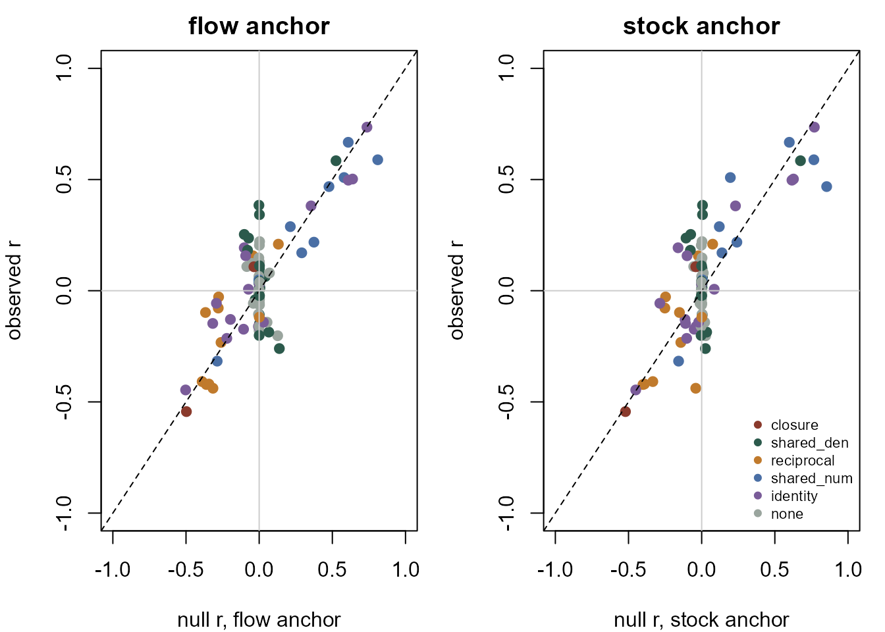
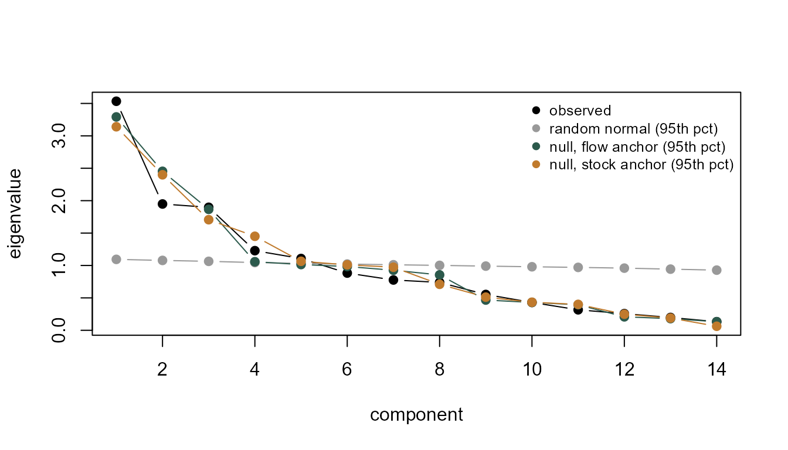

Construction-induced correlation among fiscal ratios
Source:vignettes/ratio-correlation-artifacts.Rmd
ratio-correlation-artifacts.RmdThe question
The fiscal health index factors a correlation matrix of 14 ratios. Those ratios are built from about 20 Form 990 lines, and many of them share a line: the same denominator (total expenses, total assets), the same numerator (cash, the surplus), or a line that sits on top of one ratio and underneath another. Two ratios that share a line correlate even when nothing links the organizations’ finances. Shares of one whole correlate negatively by definition.
This article asks three questions:
- How much of each pairwise correlation is construction? We build a construction null: the same 990 lines, shuffled across organizations so that every substantive relationship is destroyed while the arithmetic of the ratios, the accounting identities, and the pipeline (rules, imputation, winsorizing, asinh) are kept.
- Does the construction null manufacture factors? If PCA on arithmetic alone returns components that look like the health dimensions, those dimensions are at least partly definitional.
- Is there one pre-processing fix that removes the artifact consistently across all 91 pairs, without destroying variables or the matrix?
- Does redesigning the variable set by link type work better than transforming the ratios?
By default the article runs on the bundled dat10k sample
(2021). Set the efile_path parameter to an e-file extract
(for example the deduplicated 2023 file) to run it on a full tax
year.
1. Components and ratios
The ratio rules and imputation are the measurement model from
vignette("variance-preserving-normalization"). They are
split into two steps here, lines and
ratios, so the null can shuffle lines and then rebuild
ratios exactly as the real data are built.
fix64 <- function(x) {
if (inherits(x, "integer64")) return(as.numeric(x))
if (is.double(x)) {
nz <- x[!is.na(x) & x != 0]
if (length(nz) && all(abs(nz) < 1e-300)) {
class(x) <- "integer64"
return(as.numeric(x))
}
}
x
}
pct_rank <- function(x) { r <- rank(x, na.last = "keep"); (r - 0.5) / sum(!is.na(x)) }
rank_normal <- function(x) qnorm(pct_rank(x))
fill_median <- function(x) { x[is.na(x)] <- median(x, na.rm = TRUE); x }
winsor <- function(x, p = 0.01) {
q <- quantile(x, c(p, 1 - p), na.rm = TRUE)
pmin(pmax(x, q[[1]]), q[[2]])
}
winsor_normalize <- function(x, p = 0.01) {
w <- winsor(x, p)
sk <- psych::skew(w)
if (sk > 1) {
s <- median(abs(w[w != 0])); w <- asinh(w / s)
} else if (sk < -1) {
r <- max(w) - w; s <- median(r[r != 0]); w <- -asinh(r / s)
}
as.numeric(scale(w))
}
cond_impute <- function(target, predictors, miss) {
y <- rank_normal(target)
X <- as.data.frame(lapply(predictors, rank_normal))
fit <- stats::lm(y ~ ., data = cbind(y = y, X)[!miss, ])
z <- stats::predict(fit, newdata = X[miss, , drop = FALSE]) +
stats::rnorm(sum(miss), 0, summary(fit)$sigma)
out <- target
out[miss] <- stats::quantile(target[!miss], stats::pnorm(z), names = FALSE, na.rm = TRUE)
out
}
# Step 1: the 990 lines each ratio is built from.
efile_lines <- function(d) {
d <- as.data.frame(d)
d <- d[d$RETURN_TYPE == "990", ]
fin <- function(f) {
x <- if (f %in% names(d)) suppressWarnings(as.numeric(fix64(d[[f]]))) else rep(0, nrow(d))
x[is.na(x)] <- 0
x
}
k <- data.frame(
cash = fin("F9_10_ASSET_CASH_EOY") + fin("F9_10_ASSET_SAVING_EOY"),
recv = fin("F9_10_ASSET_PLEDGE_NET_EOY") + fin("F9_10_ASSET_ACC_NET_EOY"),
othca = fin("F9_10_ASSET_INV_SALE_EOY") + fin("F9_10_ASSET_EXP_PREPAID_EOY"),
ap = fin("F9_10_LIAB_ACC_PAYABLE_EOY"),
cl = fin("F9_10_LIAB_ACC_PAYABLE_EOY") + fin("F9_10_LIAB_GRANT_PAYABLE_EOY"),
A = fin("F9_10_ASSET_TOT_EOY"), L = fin("F9_10_LIAB_TOT_EOY"),
NA_eoy = fin("F9_10_NAFB_TOT_EOY"), NA_boy = fin("F9_10_NAFB_TOT_BOY"),
UNA = fin("F9_10_NAFB_UNRESTRICT_EOY"), RES = fin("F9_10_NAFB_RESTRICT_EOY"),
land = fin("F9_10_ASSET_LAND_BLDG_NET_EOY"), mtg = fin("F9_10_LIAB_MTG_NOTE_EOY"),
R = fin("F9_08_REV_TOT_TOT"), E = fin("F9_09_EXP_TOT_TOT"), dep = fin("F9_09_EXP_DEPREC_TOT"),
progrev = fin("F9_08_REV_PROG_TOT_TOT"),
P = fin("F9_09_EXP_TOT_PROG"), M = fin("F9_09_EXP_TOT_MGMT"), Fu = fin("F9_09_EXP_TOT_FUNDR"))
k[k$E > 0, ]
}
# Step 2: rules, conditional imputation, winsorize + normalize.
candidates <- c("current", "months_cash", "liquid_months", "cash_assets", "debt_assets",
"payables_una", "surplus_margin", "return_assets", "na_growth", "self_suff",
"admin_exp", "fundr_exp", "land_assets", "assets_rev")
lines_to_frame <- function(k) {
k$ca <- k$cash + k$recv + k$othca
k$una <- ifelse(k$UNA == 0 & k$RES == 0, k$NA_eoy, k$UNA)
k$fsum <- k$P + k$M + k$Fu
k$opE <- ifelse(k$E - k$dep > 0, k$E - k$dep, k$E)
rules <- with(k, data.frame(
current = ifelse(cl > 0, ca / cl, NA),
months_cash = (cash + recv) / (opE / 12),
liquid_months = (una - land + mtg) / (E / 12),
cash_assets = ifelse(A > 0, pmin(cash / A, 1), NA),
debt_assets = ifelse(A > 0, L / A, ifelse(L > 0, NA, 0)),
payables_una = ifelse(ap > 0, ap / (ap + pmax(una, 0)), 0),
surplus_margin = (R - E) / pmax(R, E),
return_assets = ifelse(A > 0, (R - E) / A, NA),
na_growth = ifelse(NA_eoy == 0 & NA_boy == 0, 0,
(NA_eoy - NA_boy) / ((abs(NA_eoy) + abs(NA_boy)) / 2)),
self_suff = progrev / E,
admin_exp = ifelse(fsum > 0, M / fsum, NA),
fundr_exp = ifelse(fsum > 0, Fu / fsum, NA),
land_assets = ifelse(A > 0, land / A, 0),
assets_rev = A / ifelse(R > 0, R, E)))
if (any(k$A <= 0 & k$L > 0))
rules$debt_assets[k$A <= 0 & k$L > 0] <- max(rules$debt_assets, na.rm = TRUE)
frame <- rules
preds <- as.data.frame(lapply(
rules[, c("liquid_months", "surplus_margin", "debt_assets", "months_cash")], fill_median))
frame$current <- cond_impute(rules$current, preds, k$cl == 0)
base_preds <- c("liquid_months", "surplus_margin", "months_cash", "self_suff")
for (v in names(frame)) if (anyNA(frame[[v]])) {
frame[[v]] <- cond_impute(frame[[v]], frame[, setdiff(base_preds, v), drop = FALSE],
is.na(frame[[v]]))
}
frame
}
normalize_frame <- function(frame) as.data.frame(lapply(frame[candidates], winsor_normalize))
lines_to_ratios <- function(k) normalize_frame(lines_to_frame(k))
if (nzchar(params$efile_path)) {
efile <- readRDS(params$efile_path)
source_label <- basename(params$efile_path)
} else {
data(dat10k, package = "fiscal")
efile <- dat10k
source_label <- "dat10k (2021 sample)"
}
k <- efile_lines(efile)
rm(efile); invisible(gc())
frame_obs <- lines_to_frame(k)
X <- normalize_frame(frame_obs)
R_obs <- cor(X)
data.frame(source = source_label, organizations = format(nrow(X), big.mark = ","),
ratios = ncol(X))
#> source organizations ratios
#> 1 dat10k (2021 sample) 5,995 142. The pairwise audit
Each of the 91 pairs is classified from the formulas alone, before looking at any data:
- closure: both numerators are disjoint parts of the shared denominator; forced negative.
- shared_den: same denominator (or two denominators that are nearly the same flow, E and R); forced positive for positive numerators.
- reciprocal: a line on top of one ratio sits underneath the other; forced negative.
- shared_num: the same line in both numerators; forced in the direction of the signs.
- identity: linked through an accounting identity (NA = A - L, change in NA ~ R - E) rather than a shared line.
- none: no shared line.
role records whether the shared term is part of what
both ratios are meant to measure (construct),
of neither (artifact), or of one
(mixed). fix is the repair that fits the
pair taken alone.
audit <- read.table(sep = "|", header = TRUE, strip.white = TRUE, text = "
v1|v2|type|shared|sign|role|fix
current|months_cash|shared_num|cash, recv|+|construct|keep
current|liquid_months|identity|ca in una; cl in L|+|construct|keep
current|cash_assets|shared_num|cash|+|artifact|benchmark
current|debt_assets|reciprocal|ca in A; cl in L|-|mixed|benchmark
current|payables_una|reciprocal|ap|-|artifact|benchmark
current|surplus_margin|none||0||none
current|return_assets|reciprocal|ca in A (signed numerator)|mixed|artifact|benchmark
current|na_growth|none||0||none
current|self_suff|none||0||none
current|admin_exp|none||0||none
current|fundr_exp|none||0||none
current|land_assets|identity|ca and land in A|-|artifact|benchmark
current|assets_rev|shared_num|ca in A|+|mixed|benchmark
months_cash|liquid_months|shared_den|E; cash, recv in una|+|construct|keep
months_cash|cash_assets|shared_num|cash|+|artifact|benchmark
months_cash|debt_assets|reciprocal|cash, recv in A|-|artifact|benchmark
months_cash|payables_una|identity|cash, recv in una|-|artifact|benchmark
months_cash|surplus_margin|shared_den|E (signed numerator)|+|artifact|resid_E
months_cash|return_assets|shared_den|E (+); cash in A (-)|mixed|artifact|resid_E
months_cash|na_growth|identity|dNA ~ R - E|+|artifact|resid_E
months_cash|self_suff|shared_den|E|+|artifact|resid_E
months_cash|admin_exp|shared_den|E|+|artifact|resid_E
months_cash|fundr_exp|shared_den|E|+|artifact|resid_E
months_cash|land_assets|identity|cash and land in A|-|artifact|benchmark
months_cash|assets_rev|shared_num|cash in A; E ~ R|+|mixed|benchmark
liquid_months|cash_assets|identity|cash in una|+|artifact|benchmark
liquid_months|debt_assets|identity|L lowers una|-|mixed|benchmark
liquid_months|payables_una|reciprocal|una|-|artifact|benchmark
liquid_months|surplus_margin|shared_den|E (signed numerator)|+|artifact|resid_E
liquid_months|return_assets|shared_den|E (+); una in A (-)|mixed|artifact|resid_E
liquid_months|na_growth|identity|una in NA|mixed|mixed|benchmark
liquid_months|self_suff|shared_den|E|+|artifact|resid_E
liquid_months|admin_exp|shared_den|E|+|artifact|resid_E
liquid_months|fundr_exp|shared_den|E|+|artifact|resid_E
liquid_months|land_assets|shared_num|land (opposite signs)|-|construct|keep
liquid_months|assets_rev|identity|una in A; E ~ R|+|mixed|benchmark
cash_assets|debt_assets|shared_den|A|+|artifact|resid_A
cash_assets|payables_una|none||0||none
cash_assets|surplus_margin|none||0||none
cash_assets|return_assets|shared_den|A (signed numerator)|mixed|artifact|resid_A
cash_assets|na_growth|none||0||none
cash_assets|self_suff|none||0||none
cash_assets|admin_exp|none||0||none
cash_assets|fundr_exp|none||0||none
cash_assets|land_assets|closure|parts of A|-|artifact|log_ratio
cash_assets|assets_rev|reciprocal|A|-|artifact|benchmark
debt_assets|payables_una|shared_num|ap in L; una = A - L - RES|+|construct|keep
debt_assets|surplus_margin|none||0||none
debt_assets|return_assets|shared_den|A (signed numerator)|mixed|artifact|resid_A
debt_assets|na_growth|identity|NA = A - L|mixed|artifact|benchmark
debt_assets|self_suff|none||0||none
debt_assets|admin_exp|none||0||none
debt_assets|fundr_exp|none||0||none
debt_assets|land_assets|shared_den|A|+|mixed|resid_A
debt_assets|assets_rev|reciprocal|A|-|artifact|benchmark
payables_una|surplus_margin|none||0||none
payables_una|return_assets|none||0||none
payables_una|na_growth|identity|una in NA|mixed|artifact|benchmark
payables_una|self_suff|none||0||none
payables_una|admin_exp|none||0||none
payables_una|fundr_exp|none||0||none
payables_una|land_assets|none||0||none
payables_una|assets_rev|identity|una in A|-|artifact|benchmark
surplus_margin|return_assets|shared_num|R - E|+|construct|combine
surplus_margin|na_growth|identity|dNA ~ R - E|+|construct|combine
surplus_margin|self_suff|shared_num|progrev in R; E|+|artifact|resid_E
surplus_margin|admin_exp|shared_den|E|+|artifact|resid_E
surplus_margin|fundr_exp|shared_den|E|+|artifact|resid_E
surplus_margin|land_assets|none||0||none
surplus_margin|assets_rev|reciprocal|R|-|artifact|benchmark
return_assets|na_growth|identity|dNA ~ R - E|+|construct|combine
return_assets|self_suff|shared_num|progrev in R|+|artifact|benchmark
return_assets|admin_exp|shared_den|E|+|artifact|resid_E
return_assets|fundr_exp|shared_den|E|+|artifact|resid_E
return_assets|land_assets|shared_den|A (signed numerator)|mixed|artifact|resid_A
return_assets|assets_rev|reciprocal|A; R|-|artifact|benchmark
na_growth|self_suff|identity|progrev in R; dNA ~ R - E|+|artifact|benchmark
na_growth|admin_exp|none||0||none
na_growth|fundr_exp|none||0||none
na_growth|land_assets|none||0||none
na_growth|assets_rev|identity|NA in A|mixed|artifact|benchmark
self_suff|admin_exp|shared_den|E|+|artifact|resid_E
self_suff|fundr_exp|shared_den|E|+|artifact|resid_E
self_suff|land_assets|none||0||none
self_suff|assets_rev|reciprocal|progrev in R; E ~ R|mixed|artifact|benchmark
admin_exp|fundr_exp|closure|parts of E|-|artifact|log_ratio
admin_exp|land_assets|none||0||none
admin_exp|assets_rev|shared_den|E ~ R|+|artifact|resid_E
fundr_exp|land_assets|none||0||none
fundr_exp|assets_rev|shared_den|E ~ R|+|artifact|resid_E
land_assets|assets_rev|reciprocal|A|-|artifact|benchmark
", colClasses = "character", na.strings = NULL)
stopifnot(nrow(audit) == choose(length(candidates), 2))
audit$r_obs <- R_obs[cbind(audit$v1, audit$v2)]
table(audit$type)
#>
#> closure identity none reciprocal shared_den shared_num
#> 2 16 28 11 24 10
table(audit$fix)
#>
#> benchmark combine keep log_ratio none resid_A resid_E
#> 28 3 5 2 28 5 203. The construction null
The null keeps each organization’s size and every accounting identity, and destroys everything else. Each 990 line is divided by a size reference, shuffled across organizations independently of every other line, multiplied back, and the totals are rebuilt from their parts (A = sum of asset lines, L = sum of liability lines, NA = A - L, NA_boy from the surplus). The ratios are then rebuilt with the same rules, imputation, and transformations as the real data.
Coupling through a denominator is an artifact only to the extent that the denominator varies independently of size, so the null depends on the size reference. We run two:
- flow anchor: size = total expenses. Expense-denominator coupling is absent by definition; balance-sheet coupling is present.
- stock anchor: size = total assets. Expenses become an independent draw relative to assets, so expense-denominator coupling is present.
# `draw(x, line)` reassigns one size-scaled line across organizations. The
# default is an independent shuffle; section 10 swaps in a draw that plants
# known factors.
null_lines <- function(k, anchor = c("flow", "stock", "joint"),
draw = function(x, line) x[sample.int(length(x))]) {
anchor <- match.arg(anchor)
# "joint" (section 11): balance-sheet lines relative to assets, flow lines
# relative to the organization's own expenses, which are never shuffled.
gp <- k$cl - k$ap
otherA <- pmax(k$A - k$cash - k$recv - k$othca - k$land, 0)
otherL <- pmax(k$L - k$cl - k$mtg, 0)
res_sh <- ifelse(k$UNA >= 0 & k$RES > 0, k$RES / (k$UNA + k$RES), 0)
na_oth <- (k$NA_eoy - k$NA_boy) - (k$R - k$E)
size <- if (anchor == "flow") k$E else ifelse(k$A > 0, k$A, k$E)
E <- if (anchor == "stock") draw(k$E / size, "E") * size else k$E
bs <- function(x, line) draw(x / size, line) * size # balance-sheet lines
fl <- function(x, line) draw(x / k$E, line) * E # flow lines, relative to expenses
out <- k
out$cash <- bs(k$cash, "cash"); out$recv <- bs(k$recv, "recv"); out$othca <- bs(k$othca, "othca")
out$land <- bs(k$land, "land"); out$ap <- bs(k$ap, "ap"); out$mtg <- bs(k$mtg, "mtg")
out$cl <- out$ap + bs(gp, "gp")
out$A <- out$cash + out$recv + out$othca + out$land + bs(otherA, "otherA")
out$L <- out$cl + out$mtg + bs(otherL, "otherL")
out$NA_eoy <- out$A - out$L
out$RES <- ifelse(out$NA_eoy > 0, draw(res_sh, "res_sh") * out$NA_eoy, 0)
out$UNA <- out$NA_eoy - out$RES
out$E <- E
out$R <- fl(k$R, "R"); out$dep <- fl(k$dep, "dep"); out$progrev <- fl(k$progrev, "progrev")
out$P <- fl(k$P, "P"); out$M <- fl(k$M, "M"); out$Fu <- fl(k$Fu, "Fu")
out$NA_boy <- out$NA_eoy - (out$R - out$E) - fl(na_oth, "na_oth")
out
}4. Candidate fixes
All fixes are applied to each variable, not to each correlation, except F1, which is included to show why pairwise correction fails.
- F0 as built: the winsorized, normalized frame.
- F1 pairwise null subtraction: R_obs - (R_null - I), one adjustment per pair.
- F2 common size residualization: every ratio is regressed on natural splines of log expenses and log assets; the residuals are re-standardized.
-
F3 denominator-specific residualization: each ratio
is regressed only on the scale variable in its own denominator (E, A, or
nothing for
current,payables_una, andna_growth).
den_scale <- c(current = "none", months_cash = "E", liquid_months = "E", cash_assets = "A",
debt_assets = "A", payables_una = "none", surplus_margin = "E",
return_assets = "A", na_growth = "none", self_suff = "E", admin_exp = "E",
fundr_exp = "E", land_assets = "A", assets_rev = "E")
residualize <- function(X, k, mode = c("common", "denominator")) {
mode <- match.arg(mode)
BE <- ns(log(k$E), df = 4)
BA <- ns(log1p(pmax(k$A, 0)), df = 4)
basis <- list(E = cbind(1, BE), A = cbind(1, BA), both = cbind(1, BE, BA), none = NULL)
out <- lapply(names(X), function(v) {
b <- if (mode == "common") "both" else den_scale[[v]]
if (b == "none") return(X[[v]])
as.numeric(scale(lm.fit(basis[[b]], X[[v]])$residuals))
})
names(out) <- names(X)
as.data.frame(out)
}
size_basis <- cbind(1, ns(log(k$E), df = 4), ns(log1p(pmax(k$A, 0)), df = 4))
size_r2 <- vapply(names(X), function(v) 1 - var(lm.fit(size_basis, X[[v]])$residuals) / var(X[[v]]), 0)
round(sort(size_r2, decreasing = TRUE), 3)
#> assets_rev months_cash liquid_months cash_assets current payables_una debt_assets
#> 0.737 0.474 0.401 0.384 0.196 0.185 0.131
#> land_assets surplus_margin self_suff return_assets na_growth fundr_exp admin_exp
#> 0.117 0.110 0.065 0.057 0.047 0.039 0.032size_r2 is the share of each ratio’s variance explained
by the size splines. A value near 1 means residualizing on size erases
the variable.
reps <- params$reps
run_null <- function(anchor) {
lapply(seq_len(reps), function(i) {
kn <- null_lines(k, anchor)
Xn <- lines_to_ratios(kn)
list(F0 = cor(Xn),
F2 = cor(residualize(Xn, kn, "common")),
F3 = cor(residualize(Xn, kn, "denominator")))
})
}
null_runs <- list(flow = run_null("flow"), stock = run_null("stock"))
mean_mat <- function(runs, fix) Reduce(`+`, lapply(runs, `[[`, fix)) / length(runs)
eig_q95 <- function(runs, fix) apply(sapply(runs, function(r) eigen(r[[fix]], TRUE, only.values = TRUE)$values),
1, quantile, 0.95)
R_null <- lapply(null_runs, function(runs) lapply(c(F0 = "F0", F2 = "F2", F3 = "F3"),
function(f) mean_mat(runs, f)))
for (a in names(R_null)) audit[[paste0("r_null_", a)]] <- R_null[[a]]$F0[cbind(audit$v1, audit$v2)]5. How much of each correlation is construction?
type_col <- c(closure = "#8A3A2C", shared_den = "#2C5A4C", reciprocal = "#C07A2C",
shared_num = "#4A6FA5", identity = "#7A5C99", none = "#9AA59E")
op <- par(mfrow = c(1, 2), mar = c(4, 4, 2, 1))
for (a in c("flow", "stock")) {
x <- audit[[paste0("r_null_", a)]]
plot(x, audit$r_obs, pch = 19, col = type_col[audit$type], xlim = c(-1, 1), ylim = c(-1, 1),
xlab = paste("null r,", a, "anchor"), ylab = "observed r", main = paste(a, "anchor"))
abline(0, 1, lty = 2); abline(h = 0, v = 0, col = "grey80")
}
legend("bottomright", legend = names(type_col), col = type_col, pch = 19, cex = 0.7, bty = "n")
par(op)
audit$r_null_max <- ifelse(abs(audit$r_null_flow) >= abs(audit$r_null_stock),
audit$r_null_flow, audit$r_null_stock)
by_type <- do.call(rbind, lapply(split(audit, audit$type), function(s) data.frame(
type = s$type[1], pairs = nrow(s),
mean_abs_obs = mean(abs(s$r_obs)),
mean_abs_null_flow = mean(abs(s$r_null_flow)),
mean_abs_null_stock = mean(abs(s$r_null_stock)),
share_of_obs = sum(abs(s$r_null_max)) / sum(abs(s$r_obs)))))
knitr::kable(by_type[order(-by_type$mean_abs_null_flow), ], digits = 3, row.names = FALSE)| type | pairs | mean_abs_obs | mean_abs_null_flow | mean_abs_null_stock | share_of_obs |
|---|---|---|---|---|---|
| shared_num | 10 | 0.331 | 0.364 | 0.308 | 1.215 |
| identity | 16 | 0.248 | 0.267 | 0.235 | 1.116 |
| closure | 2 | 0.326 | 0.267 | 0.281 | 0.862 |
| reciprocal | 11 | 0.237 | 0.252 | 0.187 | 1.095 |
| shared_den | 24 | 0.145 | 0.045 | 0.044 | 0.368 |
| none | 28 | 0.088 | 0.017 | 0.006 | 0.196 |
# Does the formula-based sign prediction match the null?
signed <- audit[audit$sign %in% c("+", "-") & abs(audit$r_null_max) >= 0.05, ]
sign_hit <- mean(sign(signed$r_null_max) == ifelse(signed$sign == "+", 1, -1))
none_ok <- mean(abs(audit$r_null_max[audit$type == "none"]) < 0.05)
c(signed_pairs_with_null_r_ge_05 = nrow(signed), sign_agreement = round(sign_hit, 3),
none_pairs_below_05 = round(none_ok, 3))
#> signed_pairs_with_null_r_ge_05 sign_agreement none_pairs_below_05
#> 32.000 0.906 0.821
top <- audit[order(-abs(audit$r_null_max)), c("v1", "v2", "type", "role", "sign",
"r_obs", "r_null_flow", "r_null_stock")]
knitr::kable(head(top, 20), digits = 2, row.names = FALSE,
caption = "The 20 pairs with the largest construction-null correlation")| v1 | v2 | type | role | sign | r_obs | r_null_flow | r_null_stock |
|---|---|---|---|---|---|---|---|
| months_cash | assets_rev | shared_num | mixed | + | 0.47 | 0.48 | 0.85 |
| surplus_margin | return_assets | shared_num | construct | + | 0.59 | 0.81 | 0.77 |
| return_assets | na_growth | identity | construct | + | 0.74 | 0.74 | 0.77 |
| months_cash | liquid_months | shared_den | construct | + | 0.58 | 0.52 | 0.68 |
| liquid_months | assets_rev | identity | mixed | + | 0.50 | 0.64 | 0.63 |
| surplus_margin | na_growth | identity | construct | + | 0.50 | 0.61 | 0.62 |
| debt_assets | payables_una | shared_num | construct | + | 0.67 | 0.61 | 0.60 |
| current | months_cash | shared_num | construct | + | 0.51 | 0.58 | 0.20 |
| cash_assets | land_assets | closure | artifact | - | -0.54 | -0.50 | -0.52 |
| liquid_months | debt_assets | identity | mixed | - | -0.45 | -0.50 | -0.45 |
| current | debt_assets | reciprocal | mixed | - | -0.42 | -0.36 | -0.40 |
| current | payables_una | reciprocal | artifact | - | -0.42 | -0.34 | -0.39 |
| liquid_months | payables_una | reciprocal | artifact | - | -0.41 | -0.39 | -0.33 |
| months_cash | cash_assets | shared_num | artifact | + | 0.22 | 0.37 | 0.24 |
| debt_assets | assets_rev | reciprocal | artifact | - | -0.10 | -0.37 | -0.15 |
| current | liquid_months | identity | construct | + | 0.38 | 0.35 | 0.23 |
| payables_una | assets_rev | identity | artifact | - | -0.15 | -0.32 | -0.11 |
| cash_assets | assets_rev | reciprocal | artifact | - | -0.44 | -0.32 | -0.04 |
| na_growth | assets_rev | identity | artifact | mixed | -0.06 | -0.29 | -0.29 |
| current | assets_rev | shared_num | mixed | + | 0.17 | 0.29 | 0.14 |
6. Does arithmetic alone produce components?
eig_obs <- eigen(R_obs, TRUE, only.values = TRUE)$values
eig_rand <- apply(replicate(20, eigen(cor(matrix(rnorm(nrow(X) * ncol(X)), ncol = ncol(X))),
TRUE, only.values = TRUE)$values), 1, quantile, 0.95)
eig_flow <- eig_q95(null_runs$flow, "F0")
eig_stock <- eig_q95(null_runs$stock, "F0")
matplot(seq_along(eig_obs), cbind(eig_obs, eig_rand, eig_flow, eig_stock), type = "b",
pch = 19, lty = 1, col = c("black", "grey60", "#2C5A4C", "#C07A2C"),
xlab = "component", ylab = "eigenvalue")
legend("topright", c("observed", "random normal (95th pct)", "null, flow anchor (95th pct)",
"null, stock anchor (95th pct)"),
col = c("black", "grey60", "#2C5A4C", "#C07A2C"), pch = 19, bty = "n", cex = 0.8)
# Components retained: leading eigenvalues that exceed the reference, stopping at the first that does not.
n_retain <- function(obs, ref) { x <- c(obs > ref, FALSE); which.min(x) - 1 }
retain <- c(random_normal = n_retain(eig_obs, eig_rand), null_flow = n_retain(eig_obs, eig_flow),
null_stock = n_retain(eig_obs, eig_stock))
retain
#> random_normal null_flow null_stock
#> 5 1 1
knitr::kable(data.frame(component = seq_along(eig_obs), observed = eig_obs, random_normal = eig_rand,
null_flow = eig_flow, null_stock = eig_stock), digits = 2)| component | observed | random_normal | null_flow | null_stock |
|---|---|---|---|---|
| 1 | 3.53 | 1.09 | 3.29 | 3.14 |
| 2 | 1.95 | 1.08 | 2.45 | 2.40 |
| 3 | 1.90 | 1.06 | 1.87 | 1.71 |
| 4 | 1.23 | 1.05 | 1.06 | 1.45 |
| 5 | 1.11 | 1.03 | 1.01 | 1.06 |
| 6 | 0.88 | 1.02 | 0.98 | 1.01 |
| 7 | 0.78 | 1.01 | 0.93 | 0.97 |
| 8 | 0.74 | 1.00 | 0.85 | 0.71 |
| 9 | 0.55 | 0.99 | 0.47 | 0.51 |
| 10 | 0.43 | 0.98 | 0.43 | 0.43 |
| 11 | 0.32 | 0.97 | 0.39 | 0.40 |
| 12 | 0.26 | 0.96 | 0.21 | 0.25 |
| 13 | 0.20 | 0.94 | 0.18 | 0.19 |
| 14 | 0.13 | 0.93 | 0.13 | 0.06 |
anchors <- c(performance = "return_assets", reserves = "months_cash",
leverage = "debt_assets", asset_structure = "land_assets",
expense = "fundr_exp")
pca5 <- function(R) {
L <- unclass(psych::principal(R, nfactors = 5, rotate = "oblimin", n.obs = nrow(X))$loadings)
perms <- function(n) if (n == 1) list(1L) else
do.call(c, lapply(seq_len(n), function(i) lapply(perms(n - 1), function(p) c(i, setdiff(seq_len(n), i)[p]))))
P <- perms(5)
A <- abs(L[anchors, , drop = FALSE])
best <- P[[which.max(vapply(P, function(p) sum(A[cbind(1:5, p)]), 0))]]
L <- L[, best]
L <- sweep(L, 2, sign(diag(L[anchors, ])), `*`) # anchor loads positively
colnames(L) <- names(anchors)
L
}
show_loadings <- function(L, caption) {
L[abs(L) < 0.30] <- NA
knitr::kable(L, digits = 2, caption = caption)
}
congruence <- function(A, B) diag(psych::factor.congruence(A, B, digits = 3))
L_obs <- pca5(R_obs)
show_loadings(L_obs, "F0 as built: five-component oblimin loadings")| performance | reserves | leverage | asset_structure | expense | |
|---|---|---|---|---|---|
| current | NA | 0.45 | -0.37 | NA | NA |
| months_cash | NA | 0.84 | NA | NA | NA |
| liquid_months | NA | 0.73 | NA | NA | NA |
| cash_assets | NA | NA | NA | -0.89 | NA |
| debt_assets | NA | NA | 0.80 | NA | NA |
| payables_una | NA | NA | 0.86 | NA | NA |
| surplus_margin | 0.77 | NA | NA | NA | NA |
| return_assets | 0.90 | NA | NA | NA | NA |
| na_growth | 0.87 | NA | NA | NA | NA |
| self_suff | NA | NA | NA | NA | -0.64 |
| admin_exp | NA | 0.40 | 0.46 | NA | 0.35 |
| fundr_exp | NA | NA | NA | NA | 0.81 |
| land_assets | NA | NA | NA | 0.81 | NA |
| assets_rev | NA | 0.71 | NA | 0.52 | NA |
L_null_flow <- pca5(R_null$flow$F0)
L_null_stock <- pca5(R_null$stock$F0)
show_loadings(L_null_flow, "Construction null, flow anchor")| performance | reserves | leverage | asset_structure | expense | |
|---|---|---|---|---|---|
| current | NA | NA | -0.64 | -0.33 | NA |
| months_cash | NA | NA | -0.66 | -0.50 | NA |
| liquid_months | NA | NA | -0.81 | NA | NA |
| cash_assets | NA | NA | NA | -0.88 | NA |
| debt_assets | NA | NA | 0.76 | NA | NA |
| payables_una | NA | NA | 0.70 | NA | NA |
| surplus_margin | 0.90 | NA | NA | NA | NA |
| return_assets | 0.93 | NA | NA | NA | NA |
| na_growth | 0.86 | NA | NA | NA | NA |
| self_suff | NA | -1 | NA | NA | NA |
| admin_exp | NA | NA | NA | NA | -0.72 |
| fundr_exp | NA | NA | NA | NA | 0.72 |
| land_assets | NA | NA | NA | 0.76 | NA |
| assets_rev | NA | NA | -0.70 | NA | NA |
show_loadings(L_null_stock, "Construction null, stock anchor")| performance | reserves | leverage | asset_structure | expense | |
|---|---|---|---|---|---|
| current | NA | NA | -0.69 | NA | NA |
| months_cash | NA | 0.96 | NA | NA | NA |
| liquid_months | NA | 0.75 | -0.30 | NA | NA |
| cash_assets | NA | NA | NA | -0.87 | NA |
| debt_assets | NA | NA | 0.85 | NA | NA |
| payables_una | NA | NA | 0.85 | NA | NA |
| surplus_margin | 0.90 | NA | NA | NA | NA |
| return_assets | 0.94 | NA | NA | NA | NA |
| na_growth | 0.86 | NA | NA | NA | NA |
| self_suff | NA | NA | NA | NA | NA |
| admin_exp | NA | NA | NA | NA | -0.72 |
| fundr_exp | NA | NA | NA | NA | 0.72 |
| land_assets | NA | NA | NA | 0.87 | NA |
| assets_rev | NA | 0.94 | NA | NA | NA |
round(rbind(null_flow = congruence(L_null_flow, L_obs),
null_stock = congruence(L_null_stock, L_obs)), 2)
#> performance reserves leverage asset_structure expense
#> null_flow 0.98 0.01 0.69 0.90 0.29
#> null_stock 0.99 0.89 0.89 0.95 0.33Congruence here compares each null component with the observed component of the same label. Values of 0.85 or more mean the arithmetic alone reproduces that component’s loading pattern.
7. Do the fixes remove the artifact consistently?
off <- function(R) R[upper.tri(R)]
fix_null <- do.call(rbind, lapply(names(R_null), function(a) do.call(rbind, lapply(
c("F0", "F2", "F3"), function(f) {
r <- off(R_null[[a]][[f]])
data.frame(anchor = a, fix = f, mean_abs_null_r = mean(abs(r)),
max_abs_null_r = max(abs(r)), pairs_abs_ge_10 = sum(abs(r) >= 0.10))
}))))
knitr::kable(fix_null, digits = 3, row.names = FALSE)| anchor | fix | mean_abs_null_r | max_abs_null_r | pairs_abs_ge_10 |
|---|---|---|---|---|
| flow | F0 | 0.140 | 0.810 | 33 |
| flow | F2 | 0.105 | 0.817 | 22 |
| flow | F3 | 0.131 | 0.813 | 29 |
| stock | F0 | 0.117 | 0.854 | 29 |
| stock | F2 | 0.103 | 0.775 | 22 |
| stock | F3 | 0.113 | 0.806 | 26 |
# Remaining null correlation by pair type, after each fix
pair_idx <- cbind(match(audit$v1, candidates), match(audit$v2, candidates))
type_fix <- do.call(rbind, lapply(names(R_null), function(a) {
m <- sapply(c("F0", "F2", "F3"), function(f) tapply(abs(R_null[[a]][[f]][pair_idx]), audit$type, mean))
data.frame(anchor = a, type = rownames(m), m, row.names = NULL)
}))
knitr::kable(type_fix, digits = 3, row.names = FALSE,
caption = "Mean |null r| by pair type and fix")| anchor | type | F0 | F2 | F3 |
|---|---|---|---|---|
| flow | closure | 0.267 | 0.257 | 0.263 |
| flow | identity | 0.267 | 0.204 | 0.264 |
| flow | none | 0.017 | 0.003 | 0.011 |
| flow | reciprocal | 0.252 | 0.168 | 0.200 |
| flow | shared_den | 0.045 | 0.015 | 0.036 |
| flow | shared_num | 0.364 | 0.345 | 0.378 |
| stock | closure | 0.281 | 0.281 | 0.281 |
| stock | identity | 0.235 | 0.206 | 0.232 |
| stock | none | 0.006 | 0.004 | 0.006 |
| stock | reciprocal | 0.187 | 0.180 | 0.167 |
| stock | shared_den | 0.044 | 0.021 | 0.037 |
| stock | shared_num | 0.308 | 0.286 | 0.311 |
X_F2 <- residualize(X, k, "common")
X_F3 <- residualize(X, k, "denominator")
R_F2 <- cor(X_F2); R_F3 <- cor(X_F3)
R_F1 <- R_obs - (R_null$flow$F0 - diag(ncol(X)))
R_F1s <- R_obs - (R_null$stock$F0 - diag(ncol(X)))
min_eig <- sapply(list(F0 = R_obs, F1_flow = R_F1, F1_stock = R_F1s, F2 = R_F2, F3 = R_F3),
function(R) min(eigen(R, TRUE, only.values = TRUE)$values))
round(min_eig, 3)
#> F0 F1_flow F1_stock F2 F3
#> 0.133 -0.320 -0.304 0.193 0.177
ev <- function(R) eigen(R, TRUE, only.values = TRUE)$values
retain_fix <- rbind(
F0 = c(n_retain(eig_obs, eig_flow), n_retain(eig_obs, eig_stock)),
F2 = c(n_retain(ev(R_F2), eig_q95(null_runs$flow, "F2")),
n_retain(ev(R_F2), eig_q95(null_runs$stock, "F2"))),
F3 = c(n_retain(ev(R_F3), eig_q95(null_runs$flow, "F3")),
n_retain(ev(R_F3), eig_q95(null_runs$stock, "F3"))))
colnames(retain_fix) <- c("vs null flow", "vs null stock")
retain_fix
#> vs null flow vs null stock
#> F0 1 1
#> F2 1 1
#> F3 1 1
R_F1pd <- as.matrix(Matrix::nearPD(R_F1, corr = TRUE)$mat)
dimnames(R_F1pd) <- dimnames(R_obs)
L_F1 <- pca5(R_F1pd); L_F2 <- pca5(R_F2); L_F3 <- pca5(R_F3)
show_loadings(L_F1, "F1 pairwise null subtraction (flow anchor, nearest PD)")| performance | reserves | leverage | asset_structure | expense | |
|---|---|---|---|---|---|
| current | NA | NA | NA | NA | NA |
| months_cash | 0.39 | 0.46 | NA | NA | NA |
| liquid_months | 0.42 | 0.41 | -0.35 | NA | NA |
| cash_assets | NA | NA | -0.49 | -0.40 | NA |
| debt_assets | NA | NA | NA | 0.67 | NA |
| payables_una | NA | NA | NA | 0.35 | NA |
| surplus_margin | NA | 0.94 | NA | NA | NA |
| return_assets | 0.82 | NA | NA | NA | NA |
| na_growth | 0.54 | NA | NA | NA | NA |
| self_suff | NA | NA | NA | 0.51 | -0.44 |
| admin_exp | NA | NA | NA | NA | 0.59 |
| fundr_exp | NA | NA | NA | NA | 0.73 |
| land_assets | NA | NA | NA | 0.70 | NA |
| assets_rev | NA | NA | 0.80 | NA | NA |
show_loadings(L_F2, "F2 common size residualization")| performance | reserves | leverage | asset_structure | expense | |
|---|---|---|---|---|---|
| current | NA | 0.60 | -0.46 | NA | NA |
| months_cash | NA | 0.85 | NA | NA | NA |
| liquid_months | NA | NA | NA | -0.77 | NA |
| cash_assets | NA | 0.77 | NA | NA | NA |
| debt_assets | NA | NA | 0.78 | NA | NA |
| payables_una | NA | NA | 0.86 | NA | NA |
| surplus_margin | 0.83 | NA | NA | NA | NA |
| return_assets | 0.84 | NA | NA | NA | NA |
| na_growth | 0.80 | NA | NA | NA | NA |
| self_suff | NA | NA | NA | NA | -0.70 |
| admin_exp | NA | NA | 0.36 | -0.35 | NA |
| fundr_exp | NA | NA | NA | NA | 0.82 |
| land_assets | NA | NA | NA | 0.78 | NA |
| assets_rev | -0.73 | NA | NA | NA | NA |
show_loadings(L_F3, "F3 denominator-specific residualization")| performance | reserves | leverage | asset_structure | expense | |
|---|---|---|---|---|---|
| current | NA | NA | -0.56 | NA | NA |
| months_cash | NA | 0.66 | NA | -0.44 | NA |
| liquid_months | NA | 0.64 | NA | NA | NA |
| cash_assets | NA | NA | NA | -0.89 | NA |
| debt_assets | NA | NA | 0.81 | NA | NA |
| payables_una | NA | NA | 0.89 | NA | NA |
| surplus_margin | 0.78 | NA | NA | NA | NA |
| return_assets | 0.89 | NA | NA | NA | NA |
| na_growth | 0.87 | NA | NA | NA | NA |
| self_suff | NA | NA | NA | NA | -0.72 |
| admin_exp | NA | 0.40 | 0.33 | NA | 0.31 |
| fundr_exp | NA | NA | NA | NA | 0.76 |
| land_assets | NA | NA | NA | 0.77 | NA |
| assets_rev | NA | 0.85 | NA | NA | NA |
round(rbind(F1 = congruence(L_F1, L_obs), F2 = congruence(L_F2, L_obs),
F3 = congruence(L_F3, L_obs)), 2)
#> performance reserves leverage asset_structure expense
#> F1 0.64 0.60 0.24 0.57 0.90
#> F2 0.93 0.40 0.99 0.46 0.97
#> F3 1.00 0.95 0.98 0.95 0.998. Findings
Most of the correlation structure is construction. For closure, reciprocal, identity, and shared-numerator pairs, the construction null reproduces 86% or more of the observed absolute correlation. Only shared-denominator pairs (37%) and unlinked pairs (20%) carry mostly non-arithmetic correlation. The formula-based sign prediction matches the null for 91% of the 32 pairs where the null correlation reaches 0.05.
Arithmetic alone reproduces the dimensions. With
assets as the size reference, PCA on the null matrix recovers the
observed performance, reserves, leverage, and asset-structure components
with congruence 0.99, 0.89, 0.89, and 0.95. The null’s leading
eigenvalues (3.14, 2.40, 1.71) sit next to the observed ones (3.53,
1.95, 1.90). Against a construction null, parallel analysis retains 1
component, not 5. The components are shared-ingredient components:
surplus_margin, return_assets, and
na_growth are one number (the surplus) on three scales, and
months_cash, liquid_months, and
assets_rev all inherit the ratio of assets to expenses.
No single fix is consistent across the set.
- Pairwise null subtraction (F1) produces an invalid correlation matrix (smallest eigenvalue -0.32), and after projection to the nearest valid matrix the components no longer resemble any interpretable structure.
-
Common size residualization (F2) removes most
shared-denominator artifact (mean |null r| for those pairs falls from
0.045 to 0.015), but leaves closure and shared-numerator artifact
untouched and erases 74% of
assets_rev. Reserves and asset structure are rebuilt around what is left (congruence 0.40 and 0.46). - Denominator-specific residualization (F3) keeps the matrix valid and the structure intact, but lowers the average null correlation only from 0.140 to 0.131.
The artifact lives in different places for different link types, so the repair has to be chosen by link type. The one step that applies to all 91 pairs is the construction null itself, used as a benchmark: for retention decisions, for reading loadings, and for reporting how much of each correlation exceeds what the arithmetic implies.
9. Repairing the variable set by link type
Section 7 transformed the 14 ratios. This section instead redesigns the set, choosing one repair per link type, and runs the redesigned set through the same construction null.
| Link type | Ratios affected | Repair | New variable |
|---|---|---|---|
| Closure |
cash_assets, land_assets
|
one bounded contrast, 0 when both parts are 0 |
cash_land = (cash - land) / (cash + land) |
| Closure |
admin_exp, fundr_exp
|
one bounded contrast, imputed when both parts are 0 |
admin_fundr = (M - Fu) / (M + Fu) |
| Shared numerator, construct |
surplus_margin, return_assets,
na_growth
|
enter the surplus once |
surplus = mean of the three normalized ratios |
| Stock over flow |
months_cash, liquid_months,
assets_rev
|
split into a share of assets and one scale |
liquid_assets_share = (cash + recv) / A;
una_liquid_share = (una - land + mtg) / A;
assets_exp = A / E |
| Reciprocal, identity |
current, debt_assets,
payables_una, self_suff
|
kept as built | unchanged |
Because months of cash = 12 x liquid_assets_share x
assets_exp (up to the depreciation adjustment), the
redesign keeps the information in the original ratios. The difference is
that the assets-to-expenses scale enters once, as its own variable,
instead of being hidden in three.
redesign_vars <- c("current", "liquid_assets_share", "una_liquid_share", "assets_exp",
"cash_land", "debt_assets", "payables_una", "surplus", "self_suff",
"admin_fundr")
redesign <- function(k, frame) {
una <- ifelse(k$UNA == 0 & k$RES == 0, k$NA_eoy, k$UNA)
new <- with(k, data.frame(
liquid_assets_share = ifelse(A > 0, pmin((cash + recv) / A, 1), NA),
una_liquid_share = ifelse(A > 0, (una - land + mtg) / A, NA),
assets_exp = A / E,
cash_land = ifelse(cash + land > 0, pmin(pmax((cash - land) / (cash + land), -1), 1), 0),
admin_fundr = ifelse(M + Fu > 0, pmin(pmax((M - Fu) / (M + Fu), -1), 1), NA)))
base_preds <- c("liquid_months", "surplus_margin", "months_cash", "self_suff")
for (v in names(new)) if (anyNA(new[[v]])) {
new[[v]] <- cond_impute(new[[v]], frame[, base_preds], is.na(new[[v]]))
}
Z <- as.data.frame(lapply(cbind(frame[c("current", "debt_assets", "payables_una", "self_suff",
"surplus_margin", "return_assets", "na_growth")], new),
winsor_normalize))
Z$surplus <- as.numeric(scale(rowMeans(Z[c("surplus_margin", "return_assets", "na_growth")])))
Z[redesign_vars]
}
X_S2 <- redesign(k, frame_obs)
R_S2 <- cor(X_S2)
set.seed(params$seed + 1)
run_null_S2 <- function(anchor) {
lapply(seq_len(reps), function(i) {
kn <- null_lines(k, anchor)
cor(redesign(kn, lines_to_frame(kn)))
})
}
null_S2 <- list(flow = run_null_S2("flow"), stock = run_null_S2("stock"))
R_null_S2 <- lapply(null_S2, function(runs) Reduce(`+`, runs) / length(runs))
eig_q95_S2 <- lapply(null_S2, function(runs)
apply(sapply(runs, function(r) eigen(r, TRUE, only.values = TRUE)$values), 1, quantile, 0.95))
eig_rand_S2 <- apply(replicate(20, eigen(cor(matrix(rnorm(nrow(X_S2) * ncol(X_S2)), ncol = ncol(X_S2))),
TRUE, only.values = TRUE)$values), 1, quantile, 0.95)9.1 How much construction is left?
set_summary <- function(label, R_o, R_f, R_s, e_rand, e_f, e_s) {
up <- upper.tri(R_o)
data.frame(set = label, variables = ncol(R_o), pairs = sum(up),
mean_abs_obs = mean(abs(R_o[up])),
mean_abs_null_flow = mean(abs(R_f[up])), mean_abs_null_stock = mean(abs(R_s[up])),
share_pairs_null_ge_10 = mean(pmax(abs(R_f[up]), abs(R_s[up])) >= 0.10),
retain_random = n_retain(ev(R_o), e_rand),
retain_null_flow = n_retain(ev(R_o), e_f), retain_null_stock = n_retain(ev(R_o), e_s))
}
s2_summary <- rbind(
set_summary("F0: 14 ratios as built", R_obs, R_null$flow$F0, R_null$stock$F0, eig_rand, eig_flow, eig_stock),
set_summary("S2: redesigned set", R_S2, R_null_S2$flow, R_null_S2$stock,
eig_rand_S2, eig_q95_S2$flow, eig_q95_S2$stock))
knitr::kable(s2_summary, digits = 3, row.names = FALSE)| set | variables | pairs | mean_abs_obs | mean_abs_null_flow | mean_abs_null_stock | share_pairs_null_ge_10 | retain_random | retain_null_flow | retain_null_stock |
|---|---|---|---|---|---|---|---|---|---|
| F0: 14 ratios as built | 14 | 91 | 0.181 | 0.140 | 0.117 | 0.385 | 5 | 1 | 1 |
| S2: redesigned set | 10 | 45 | 0.216 | 0.153 | 0.120 | 0.444 | 3 | 1 | 3 |
knitr::kable(data.frame(component = seq_len(ncol(R_S2)), observed = ev(R_S2), random_normal = eig_rand_S2,
null_flow = eig_q95_S2$flow, null_stock = eig_q95_S2$stock),
digits = 2, caption = "Redesigned set: eigenvalues")| component | observed | random_normal | null_flow | null_stock |
|---|---|---|---|---|
| 1 | 3.14 | 1.08 | 2.63 | 2.57 |
| 2 | 1.87 | 1.06 | 2.04 | 1.81 |
| 3 | 1.22 | 1.04 | 1.04 | 1.10 |
| 4 | 0.94 | 1.02 | 1.01 | 1.02 |
| 5 | 0.84 | 1.01 | 1.00 | 1.00 |
| 6 | 0.69 | 1.00 | 0.84 | 0.88 |
| 7 | 0.56 | 0.99 | 0.64 | 0.77 |
| 8 | 0.33 | 0.98 | 0.44 | 0.48 |
| 9 | 0.23 | 0.96 | 0.29 | 0.34 |
| 10 | 0.18 | 0.95 | 0.21 | 0.19 |
ij <- which(upper.tri(R_S2), arr.ind = TRUE)
s2_pairs <- data.frame(v1 = redesign_vars[ij[, 1]], v2 = redesign_vars[ij[, 2]],
r_obs = R_S2[ij], r_null_flow = R_null_S2$flow[ij],
r_null_stock = R_null_S2$stock[ij])
# Beyond null: the observed correlation minus the null that lies closer to it.
s2_pairs$beyond_null <- with(s2_pairs, ifelse(abs(r_obs - r_null_flow) < abs(r_obs - r_null_stock),
r_obs - r_null_flow, r_obs - r_null_stock))
s2_pairs <- s2_pairs[order(-abs(s2_pairs$r_obs)), ]
knitr::kable(head(s2_pairs, 20), digits = 2, row.names = FALSE,
caption = "Redesigned set: the 20 largest observed correlations and their nulls")| v1 | v2 | r_obs | r_null_flow | r_null_stock | beyond_null |
|---|---|---|---|---|---|
| liquid_assets_share | cash_land | 0.69 | 0.66 | 0.69 | 0.00 |
| una_liquid_share | debt_assets | -0.67 | -0.61 | -0.68 | 0.01 |
| debt_assets | payables_una | 0.67 | 0.61 | 0.60 | 0.06 |
| una_liquid_share | cash_land | 0.62 | 0.40 | 0.38 | 0.23 |
| una_liquid_share | payables_una | -0.51 | -0.42 | -0.47 | -0.04 |
| liquid_assets_share | assets_exp | -0.46 | -0.41 | -0.07 | -0.05 |
| liquid_assets_share | una_liquid_share | 0.43 | 0.17 | 0.23 | 0.21 |
| current | debt_assets | -0.42 | -0.35 | -0.40 | -0.02 |
| current | payables_una | -0.42 | -0.34 | -0.40 | -0.02 |
| current | una_liquid_share | 0.34 | 0.28 | 0.28 | 0.06 |
| cash_land | debt_assets | -0.28 | 0.10 | 0.05 | -0.33 |
| current | assets_exp | 0.27 | 0.31 | 0.15 | -0.04 |
| current | cash_land | 0.25 | 0.16 | 0.08 | 0.09 |
| assets_exp | surplus | 0.23 | -0.11 | -0.11 | 0.34 |
| current | liquid_assets_share | 0.23 | 0.22 | 0.13 | 0.01 |
| self_suff | admin_fundr | 0.22 | 0.00 | 0.00 | 0.21 |
| debt_assets | self_suff | 0.20 | 0.00 | 0.00 | 0.20 |
| debt_assets | surplus | -0.20 | 0.02 | 0.00 | -0.21 |
| current | surplus | 0.19 | -0.04 | -0.02 | 0.21 |
| assets_exp | payables_una | -0.19 | -0.34 | -0.12 | -0.07 |
The stock-over-flow decomposition is the clearest test. Before the
redesign, months_cash and liquid_months had a
null correlation of 0.52 (flow) and 0.68 (stock). Their asset-share
counterparts have 0.17 and 0.23.
9.2 What structure does the redesigned set carry?
perms <- function(n) if (n == 1) list(1L) else
do.call(c, lapply(seq_len(n), function(i) lapply(perms(n - 1), function(p) c(i, setdiff(seq_len(n), i)[p]))))
pca_k <- function(R, nf) {
L <- unclass(psych::principal(R, nfactors = nf, rotate = if (nf > 1) "oblimin" else "none",
n.obs = nrow(X))$loadings)
colnames(L) <- paste0("C", seq_len(nf))
L
}
# Reorder and re-sign the columns of L to best match ref; return matched loadings and congruence.
match_to <- function(L, ref) {
C <- psych::factor.congruence(L, ref, digits = 3)
P <- perms(ncol(ref))
p <- P[[which.max(vapply(P, function(q) sum(abs(C[cbind(q, seq_len(ncol(ref)))])), 0))]]
s <- sign(C[cbind(p, seq_len(ncol(ref)))])
L <- sweep(L[, p, drop = FALSE], 2, s, `*`)
colnames(L) <- colnames(ref)
list(L = L, congruence = setNames(abs(C[cbind(p, seq_len(ncol(ref)))]), colnames(ref)))
}
k_S2 <- max(2, n_retain(ev(R_S2), eig_rand_S2))
L_S2 <- pca_k(R_S2, k_S2)
L_S2_flow <- match_to(pca_k(R_null_S2$flow, k_S2), L_S2)
L_S2_stock <- match_to(pca_k(R_null_S2$stock, k_S2), L_S2)
show_loadings(L_S2, paste0("Redesigned set, observed: ", k_S2, " components"))| C1 | C2 | C3 | |
|---|---|---|---|
| current | 0.69 | NA | NA |
| liquid_assets_share | NA | 0.89 | NA |
| una_liquid_share | 0.67 | 0.47 | NA |
| assets_exp | 0.51 | -0.71 | NA |
| cash_land | NA | 0.77 | NA |
| debt_assets | -0.81 | NA | NA |
| payables_una | -0.79 | NA | NA |
| surplus | 0.48 | NA | NA |
| self_suff | NA | NA | 0.76 |
| admin_fundr | NA | NA | 0.76 |
show_loadings(L_S2_stock$L, "Redesigned set, construction null (stock anchor)")| C1 | C2 | C3 | |
|---|---|---|---|
| current | 0.60 | NA | NA |
| liquid_assets_share | NA | 0.90 | NA |
| una_liquid_share | 0.76 | 0.34 | NA |
| assets_exp | NA | NA | -0.65 |
| cash_land | NA | 0.92 | NA |
| debt_assets | -0.89 | NA | NA |
| payables_una | -0.81 | NA | NA |
| surplus | NA | NA | 0.81 |
| self_suff | NA | NA | NA |
| admin_fundr | NA | NA | NA |
9.3 Findings for the redesign
- Construction correlation. Mean |null r| is 0.153 (flow) and 0.120 (stock) in the redesigned set, against 0.140 and 0.117 for the as-built ratios. The share of pairs with a null correlation of 0.10 or more is 44%, against 38%. The observed mean |r| is 0.216, against 0.181.
-
Where the construction correlation now sits. The
largest null correlations are liquid_assets_share x cash_land (0.69);
una_liquid_share x debt_assets (-0.68); debt_assets x payables_una
(0.61); una_liquid_share x payables_una (-0.47). Putting every
balance-sheet quantity over total assets turns stock-over-flow coupling
into composition: the asset shares,
debt_assets, anduna_liquid_shareare parts of the same balance sheet. - Retention against the null. Parallel analysis keeps 3 components against random data, and 1 (flow) and 3 (stock) against the construction null, compared with 1 and 1 for the as-built ratios.
- How much of the remaining structure is arithmetic. Congruence of the null components with the observed 3-component solution is 0.93, 0.89, 0.18 (stock anchor) and 0.94, 0.95, 0.33 (flow anchor).
- What the data add beyond arithmetic. The largest gaps between an observed correlation and the nearer null are assets_exp x surplus (0.23 observed, 0.34 beyond null); cash_land x debt_assets (-0.28 observed, -0.33 beyond null); una_liquid_share x cash_land (0.62 observed, 0.23 beyond null); current x surplus (0.19 observed, 0.21 beyond null); self_suff x admin_fundr (0.22 observed, 0.21 beyond null). These are the relationships a factor model of this set would be entitled to interpret.
10. A factor model with construction held fixed
Sections 7 and 9 tried to remove construction correlation from the data. This section keeps the data as they are and puts the arithmetic into the model. The construction null gives the correlation matrix the ratios would have if only arithmetic linked them. Call its off-diagonal part C. The factor model is
Sigma = Lambda Lambda' + Psi + Cwith C fixed, and Lambda and Psi estimated by maximum likelihood. Unlike the pairwise subtraction in section 7, the model is fit to the observed matrix, which is a valid correlation matrix. The factors only have to explain covariance the arithmetic does not already account for.
Two questions:
- Does it work when the truth is known? Plant known factors in the 990 lines, rebuild the ratios, and check whether the model recovers them where ordinary factor analysis does not.
- What does it find in the real data? Fit it to the 14 as-built ratios, to the redesigned set from section 9, and to a composition set that treats the balance sheet as parts of one total.
10.1 The model
# ML fit of Sigma = L L' + diag(psi) + C, with C's off-diagonal fixed.
fit_offset <- function(S, C = NULL, nf, n.obs) {
p <- ncol(S)
if (is.null(C)) C <- matrix(0, p, p)
diag(C) <- 0
if (nf > 0) {
e <- eigen(S - C, symmetric = TRUE)
L0 <- e$vectors[, seq_len(nf), drop = FALSE] %*%
diag(sqrt(pmax(e$values[seq_len(nf)] - 1, 0.05)), nf)
L0 <- L0 * pmin(1, 0.9 / sqrt(pmax(rowSums(L0^2), 1e-8)))
} else {
L0 <- matrix(0, p, 0)
}
psi0 <- pmax(1 - rowSums(L0^2), 0.05)
bump <- 0
while (inherits(try(chol(tcrossprod(L0) + diag(psi0 + bump) + C), silent = TRUE), "try-error"))
bump <- bump + 0.1
unpack <- function(th) list(L = matrix(th[seq_len(p * nf)], p, nf), psi = exp(th[p * nf + seq_len(p)]))
sigma <- function(u) tcrossprod(u$L) + diag(u$psi) + C
fn <- function(th) {
ch <- try(chol(sigma(unpack(th))), silent = TRUE)
if (inherits(ch, "try-error")) return(1e10)
2 * sum(log(diag(ch))) + sum(S * chol2inv(ch))
}
gr <- function(th) {
u <- unpack(th)
ch <- try(chol(sigma(u)), silent = TRUE)
if (inherits(ch, "try-error")) return(rep(0, length(th)))
Si <- chol2inv(ch)
G <- Si - Si %*% S %*% Si
c(2 * G %*% u$L, diag(G) * u$psi)
}
opt <- optim(c(L0, log(psi0 + bump)), fn, gr, method = "BFGS", control = list(maxit = 5000))
u <- unpack(opt$par)
Sig <- sigma(u)
Fml <- opt$value - as.numeric(determinant(S)$modulus) - p
df <- p * (p + 1) / 2 - (p * nf + p - nf * (nf - 1) / 2)
chi <- (n.obs - 1) * Fml
low <- lower.tri(S, diag = TRUE)
L <- u$L
rownames(L) <- colnames(S)
list(L = L, psi = u$psi, converged = opt$convergence == 0, df = df,
rmsea = sqrt(max(chi - df, 0) / (max(df, 1) * (n.obs - 1))),
srmr = sqrt(mean((S - Sig)[low]^2)))
}
# Oblimin pattern (for display) and structure (for comparison with truth).
rotate_fit <- function(L) {
if (ncol(L) < 2) {
colnames(L) <- paste0("F", seq_len(ncol(L)))
return(list(pattern = L, structure = L))
}
r <- GPArotation::oblimin(L)
P <- unclass(r$loadings)
colnames(P) <- paste0("F", seq_len(ncol(P)))
S <- P %*% r$Phi
dimnames(S) <- dimnames(P)
list(pattern = P, structure = S)
}
null_mean_offdiag <- function(null_list) {
C <- Reduce(`+`, null_list) / length(null_list)
diag(C) <- 0
C
}
# Parallel analysis for the fixed-construction model: eigenvalues of S - C
# against those of each null draw minus C.
offset_retain <- function(S, null_list) {
C <- null_mean_offdiag(null_list)
q <- apply(sapply(null_list, function(R) ev(R - C)), 1, quantile, 0.95)
n_retain(ev(S - C), q)
}
rand_eig <- function(p, n) apply(replicate(20, ev(cor(matrix(rnorm(n * p), ncol = p)))),
1, quantile, 0.95)10.2 Test against planted factors
The planted data use the same lines and the same flow-anchored shuffle as the construction null. The difference is that some lines are reassigned through a Gaussian copula driven by three latent factors, so each line keeps its exact distribution but co-moves with the others that share its factor:
- liquidity: cash, receivables, other current assets up; payables and grants payable down;
- capital: land and buildings, mortgages, other liabilities, depreciation up;
- performance: revenue relative to expenses, other net-asset changes, program revenue up.
The “true” loading of each ratio on each factor is its correlation with the planted factor. A second scenario plants nothing, so any factor found there is false.
line_loadings <- rbind(
cash = c(0.7, 0, 0), recv = c(0.5, 0, 0), othca = c(0.3, 0, 0), ap = c(-0.4, 0, 0),
gp = c(-0.3, 0, 0), land = c(0, 0.7, 0), mtg = c(0, 0.6, 0), otherL = c(0, 0.3, 0),
dep = c(0, 0.5, 0), R = c(0, 0, 0.7), na_oth = c(0, 0, 0.4), progrev = c(0, 0, 0.3))
colnames(line_loadings) <- c("liquidity", "capital", "performance")
planted_lines <- function(k, lam) {
n <- nrow(k)
Fm <- matrix(rnorm(n * ncol(lam)), n, ncol(lam), dimnames = list(NULL, colnames(lam)))
draw <- function(x, line) {
l <- if (line %in% rownames(lam)) lam[line, ] else rep(0, ncol(lam))
if (all(l == 0)) return(x[sample.int(n)])
s <- drop(Fm %*% l) + sqrt(1 - sum(l^2)) * rnorm(n)
sort(x)[rank(s, ties.method = "first")]
}
list(k = null_lines(k, "flow", draw), F = Fm)
}
reps_p <- min(reps, 10)
run_scenario <- function(lam) {
pl <- planted_lines(k, lam)
Xp <- lines_to_ratios(pl$k)
list(S = cor(Xp), T = cor(Xp, pl$F),
nulls = lapply(c(flow = "flow", stock = "stock"), function(a)
lapply(seq_len(reps_p), function(i) cor(lines_to_ratios(null_lines(pl$k, a))))))
}
set.seed(params$seed + 2)
scen <- list(none = run_scenario(line_loadings * 0), planted = run_scenario(line_loadings))
eig_rand_14 <- rand_eig(length(candidates), nrow(X))
select_table <- function(S, nulls, e_rand) {
null_q <- function(a) apply(sapply(nulls[[a]], ev), 1, quantile, 0.95)
data.frame(random_pa = n_retain(ev(S), e_rand),
construction_pa_flow = n_retain(ev(S), null_q("flow")),
construction_pa_stock = n_retain(ev(S), null_q("stock")),
fixed_construction_flow = offset_retain(S, nulls$flow),
fixed_construction_stock = offset_retain(S, nulls$stock))
}
planted_sel <- cbind(scenario = c("nothing planted", "3 factors planted"), true_factors = c(0, 3),
rbind(select_table(scen$none$S, scen$none$nulls, eig_rand_14),
select_table(scen$planted$S, scen$planted$nulls, eig_rand_14)))
knitr::kable(planted_sel, row.names = FALSE, caption = "Number of factors retained")| scenario | true_factors | random_pa | construction_pa_flow | construction_pa_stock | fixed_construction_flow | fixed_construction_stock |
|---|---|---|---|---|---|---|
| nothing planted | 0 | 4 | 0 | 3 | 0 | 5 |
| 3 factors planted | 3 | 3 | 2 | 3 | 6 | 5 |
sp <- scen$planted
C_pf <- null_mean_offdiag(sp$nulls$flow)
C_ps <- null_mean_offdiag(sp$nulls$stock)
recover <- function(fit) {
rf <- rotate_fit(fit$L)
m <- match_to(rf$structure, sp$T)
list(congruence = m$congruence, structure = m$L)
}
planted_fits <- list(
`ordinary ML factor analysis` = fit_offset(sp$S, NULL, 3, nrow(X)),
`fixed construction, flow null` = fit_offset(sp$S, C_pf, 3, nrow(X)),
`fixed construction, stock null` = fit_offset(sp$S, C_ps, 3, nrow(X)))
planted_rec <- lapply(planted_fits, recover)
# Control: the same three fits on data with nothing planted, scored against
# the planted structure. A method that "recovers" the planted structure here
# is reading arithmetic, not the planted factors.
sn <- scen$none
control_fits <- list(
`ordinary ML factor analysis` = fit_offset(sn$S, NULL, 3, nrow(X)),
`fixed construction, flow null` = fit_offset(sn$S, null_mean_offdiag(sn$nulls$flow), 3, nrow(X)),
`fixed construction, stock null` = fit_offset(sn$S, null_mean_offdiag(sn$nulls$stock), 3, nrow(X)))
control_rec <- lapply(control_fits, recover)
recovery_table <- data.frame(
method = names(planted_rec),
planted = sapply(planted_rec, function(r) mean(r$congruence)),
nothing_planted = sapply(control_rec, function(r) mean(r$congruence)),
t(sapply(planted_rec, `[[`, "congruence")), row.names = NULL, check.names = FALSE)
recovery_table$detection_margin <- recovery_table$planted - recovery_table$nothing_planted
knitr::kable(recovery_table, digits = 2, row.names = FALSE,
caption = "Mean congruence with the planted structure (3 factors), with and without planting")| method | planted | nothing_planted | liquidity | capital | performance | detection_margin |
|---|---|---|---|---|---|---|
| ordinary ML factor analysis | 0.89 | 0.87 | 0.94 | 0.76 | 0.98 | 0.02 |
| fixed construction, flow null | 0.63 | 0.64 | 0.88 | 0.52 | 0.49 | -0.01 |
| fixed construction, stock null | 0.61 | 0.41 | 0.69 | 0.39 | 0.76 | 0.20 |
show_loadings(sp$T, "Planted structure: correlation of each ratio with each factor")| liquidity | capital | performance | |
|---|---|---|---|
| current | 0.52 | NA | NA |
| months_cash | 0.66 | NA | NA |
| liquid_months | 0.38 | NA | NA |
| cash_assets | NA | -0.30 | NA |
| debt_assets | -0.32 | NA | NA |
| payables_una | -0.39 | NA | NA |
| surplus_margin | NA | NA | 0.67 |
| return_assets | NA | NA | 0.58 |
| na_growth | NA | NA | 0.50 |
| self_suff | NA | NA | NA |
| admin_exp | NA | NA | NA |
| fundr_exp | NA | NA | NA |
| land_assets | NA | 0.53 | NA |
| assets_rev | 0.32 | NA | NA |
show_loadings(planted_rec$`ordinary ML factor analysis`$structure, "Ordinary ML factor analysis")| liquidity | capital | performance | |
|---|---|---|---|
| current | 0.64 | NA | NA |
| months_cash | 0.76 | -0.35 | NA |
| liquid_months | 0.78 | NA | NA |
| cash_assets | NA | -1.00 | NA |
| debt_assets | -0.59 | NA | NA |
| payables_una | -0.57 | NA | NA |
| surplus_margin | NA | NA | 0.83 |
| return_assets | NA | NA | 0.97 |
| na_growth | NA | NA | 0.82 |
| self_suff | NA | NA | NA |
| admin_exp | NA | NA | NA |
| fundr_exp | NA | NA | NA |
| land_assets | NA | 0.52 | NA |
| assets_rev | 0.73 | 0.34 | -0.32 |
show_loadings(planted_rec$`fixed construction, flow null`$structure, "Fixed construction, flow null")| liquidity | capital | performance | |
|---|---|---|---|
| current | NA | NA | NA |
| months_cash | NA | NA | NA |
| liquid_months | NA | NA | NA |
| cash_assets | NA | NA | NA |
| debt_assets | NA | 0.43 | NA |
| payables_una | -0.34 | NA | NA |
| surplus_margin | NA | NA | NA |
| return_assets | NA | NA | NA |
| na_growth | NA | NA | NA |
| self_suff | NA | NA | 1 |
| admin_exp | NA | NA | NA |
| fundr_exp | NA | NA | NA |
| land_assets | NA | NA | NA |
| assets_rev | NA | NA | NA |
planted_fit_k <- do.call(rbind, lapply(names(scen), function(s) {
sc <- scen[[s]]
Cf <- null_mean_offdiag(sc$nulls$flow); Cs <- null_mean_offdiag(sc$nulls$stock)
do.call(rbind, lapply(0:4, function(nf) {
f <- list(ordinary = fit_offset(sc$S, NULL, nf, nrow(X)),
fixed_flow = fit_offset(sc$S, Cf, nf, nrow(X)),
fixed_stock = fit_offset(sc$S, Cs, nf, nrow(X)))
data.frame(scenario = s, factors = nf,
t(unlist(lapply(f, function(x) c(rmsea = x$rmsea, srmr = x$srmr)))))
}))
}))
knitr::kable(planted_fit_k, digits = 3, row.names = FALSE,
caption = "Fit by number of factors, both scenarios")| scenario | factors | ordinary.rmsea | ordinary.srmr | fixed_flow.rmsea | fixed_flow.srmr | fixed_stock.rmsea | fixed_stock.srmr |
|---|---|---|---|---|---|---|---|
| none | 0 | 0.249 | 0.229 | 0.000 | 0.010 | 0.111 | 0.104 |
| none | 1 | 0.224 | 0.154 | 0.000 | 0.010 | 0.082 | 0.089 |
| none | 2 | 0.175 | 0.094 | 0.000 | 0.009 | 0.062 | 0.067 |
| none | 3 | 0.137 | 0.051 | 0.000 | 0.008 | 0.050 | 0.041 |
| none | 4 | 0.117 | 0.032 | 0.000 | 0.007 | 0.037 | 0.032 |
| planted | 0 | 0.265 | 0.245 | 0.037 | 0.045 | 0.119 | 0.118 |
| planted | 1 | 0.238 | 0.161 | 0.033 | 0.039 | 0.108 | 0.108 |
| planted | 2 | 0.186 | 0.093 | 0.029 | 0.027 | 0.079 | 0.071 |
| planted | 3 | 0.152 | 0.054 | 0.027 | 0.022 | 0.084 | 0.064 |
| planted | 4 | 0.123 | 0.035 | 0.026 | 0.018 | 0.068 | 0.056 |
10.3 The balance sheet as parts of one total
The composition set replaces every balance-sheet ratio with a share
of total assets from one of the two partitions of the balance sheet. On
the asset side the parts are liquid assets (cash, receivables, other
current assets), land and buildings, and other assets. On the funding
side they are liabilities, unrestricted net assets, and restricted net
assets. One part per side is left out so the shares are not perfectly
collinear; when restricted net assets are not reported (as in
dat10k), the funding side is liabilities alone. Flow
measures enter as ratios to expenses. The closure among the shares is
left in the data on purpose: the fixed C in the model accounts for
it.
composition <- function(k, frame, with_una) {
una <- ifelse(k$UNA == 0 & k$RES == 0, k$NA_eoy, k$UNA)
new <- with(k, data.frame(
liquid_share = ifelse(A > 0, (cash + recv + othca) / A, NA),
fixed_share = ifelse(A > 0, land / A, NA),
liab_share = ifelse(A > 0, L / A, NA),
una_share = ifelse(A > 0, una / A, NA),
assets_exp = A / E))
if (!with_una) new$una_share <- NULL
base_preds <- c("liquid_months", "surplus_margin", "months_cash", "self_suff")
for (v in names(new)) if (anyNA(new[[v]])) {
new[[v]] <- cond_impute(new[[v]], frame[, base_preds], is.na(new[[v]]))
}
as.data.frame(lapply(cbind(new, frame[c("surplus_margin", "self_suff", "admin_exp", "fundr_exp")]),
winsor_normalize))
}
with_una <- any(k$RES != 0)
X_S3 <- composition(k, frame_obs, with_una)
R_S3 <- cor(X_S3)
set.seed(params$seed + 3)
null_S3 <- lapply(c(flow = "flow", stock = "stock"), function(a) lapply(seq_len(reps), function(i) {
kn <- null_lines(k, a)
cor(composition(kn, lines_to_frame(kn), with_una))
}))
names(X_S3)
#> [1] "liquid_share" "fixed_share" "liab_share" "una_share" "assets_exp" "surplus_margin"
#> [7] "self_suff" "admin_exp" "fundr_exp"10.4 The real data
real_sets <- list(
`as built (14 ratios)` = list(S = R_obs, nulls = lapply(null_runs, function(runs) lapply(runs, `[[`, "F0"))),
`redesigned (section 9)` = list(S = R_S2, nulls = null_S2),
`composition` = list(S = R_S3, nulls = null_S3))
real_sel <- do.call(rbind, lapply(names(real_sets), function(nm) {
s <- real_sets[[nm]]
cbind(set = nm, variables = ncol(s$S), select_table(s$S, s$nulls, rand_eig(ncol(s$S), nrow(X))))
}))
knitr::kable(real_sel, row.names = FALSE, caption = "Number of factors retained, real data")| set | variables | random_pa | construction_pa_flow | construction_pa_stock | fixed_construction_flow | fixed_construction_stock |
|---|---|---|---|---|---|---|
| as built (14 ratios) | 14 | 5 | 1 | 1 | 6 | 7 |
| redesigned (section 9) | 10 | 3 | 1 | 3 | 3 | 3 |
| composition | 9 | 4 | 0 | 4 | 4 | 4 |
real_fit_k <- do.call(rbind, lapply(names(real_sets), function(nm) {
s <- real_sets[[nm]]
Cf <- null_mean_offdiag(s$nulls$flow); Cs <- null_mean_offdiag(s$nulls$stock)
do.call(rbind, lapply(0:4, function(nf) {
f <- list(ordinary = fit_offset(s$S, NULL, nf, nrow(X)),
fixed_flow = fit_offset(s$S, Cf, nf, nrow(X)),
fixed_stock = fit_offset(s$S, Cs, nf, nrow(X)))
data.frame(set = nm, factors = nf, t(unlist(lapply(f, function(x) c(rmsea = x$rmsea, srmr = x$srmr)))))
}))
}))
knitr::kable(real_fit_k, digits = 3, row.names = FALSE, caption = "Fit by number of factors, real data")| set | factors | ordinary.rmsea | ordinary.srmr | fixed_flow.rmsea | fixed_flow.srmr | fixed_stock.rmsea | fixed_stock.srmr |
|---|---|---|---|---|---|---|---|
| as built (14 ratios) | 0 | 0.243 | 0.232 | 0.107 | 0.142 | 0.121 | 0.150 |
| as built (14 ratios) | 1 | 0.214 | 0.140 | 0.094 | 0.131 | 0.112 | 0.145 |
| as built (14 ratios) | 2 | 0.194 | 0.108 | 0.093 | 0.120 | 0.108 | 0.144 |
| as built (14 ratios) | 3 | 0.161 | 0.063 | 0.085 | 0.109 | 0.106 | 0.126 |
| as built (14 ratios) | 4 | 0.131 | 0.044 | 0.080 | 0.094 | 0.102 | 0.109 |
| redesigned (section 9) | 0 | 0.278 | 0.259 | 0.117 | 0.144 | 0.141 | 0.138 |
| redesigned (section 9) | 1 | 0.217 | 0.131 | 0.108 | 0.111 | 0.115 | 0.121 |
| redesigned (section 9) | 2 | 0.142 | 0.058 | 0.099 | 0.095 | 0.104 | 0.094 |
| redesigned (section 9) | 3 | 0.155 | 0.048 | 0.097 | 0.082 | 0.098 | 0.075 |
| redesigned (section 9) | 4 | 0.111 | 0.026 | 0.104 | 0.062 | 0.091 | 0.056 |
| composition | 0 | 0.260 | 0.202 | 0.129 | 0.147 | 0.148 | 0.137 |
| composition | 1 | 0.199 | 0.135 | 0.123 | 0.125 | 0.119 | 0.116 |
| composition | 2 | 0.130 | 0.067 | 0.117 | 0.116 | 0.106 | 0.096 |
| composition | 3 | 0.107 | 0.045 | 0.117 | 0.105 | 0.107 | 0.087 |
| composition | 4 | 0.071 | 0.020 | 0.099 | 0.053 | 0.109 | 0.053 |
real_loadings <- lapply(names(real_sets), function(nm) {
s <- real_sets[[nm]]
out <- list()
for (a in c("flow", "stock")) {
nf <- max(1, min(4, real_sel$fixed_construction_flow[real_sel$set == nm] * (a == "flow") +
real_sel$fixed_construction_stock[real_sel$set == nm] * (a == "stock")))
fit <- fit_offset(s$S, null_mean_offdiag(s$nulls[[a]]), nf, nrow(X))
out[[a]] <- rotate_fit(fit$L)$pattern
cat(show_loadings(out[[a]], paste0(nm, ": fixed construction, ", a, " null, ", nf, " factor(s)")),
sep = "\n")
cat("\n\n")
}
out
})| F1 | F2 | F3 | F4 | |
|---|---|---|---|---|
| current | NA | NA | NA | NA |
| months_cash | NA | 0.44 | NA | NA |
| liquid_months | NA | NA | NA | NA |
| cash_assets | NA | NA | NA | -0.47 |
| debt_assets | 1.03 | NA | NA | NA |
| payables_una | NA | NA | NA | 0.53 |
| surplus_margin | NA | NA | 1.01 | NA |
| return_assets | NA | 0.37 | NA | NA |
| na_growth | NA | 0.33 | NA | NA |
| self_suff | NA | NA | NA | NA |
| admin_exp | NA | NA | NA | NA |
| fundr_exp | NA | NA | NA | NA |
| land_assets | NA | NA | NA | NA |
| assets_rev | NA | NA | NA | NA |
| F1 | F2 | F3 | F4 | |
|---|---|---|---|---|
| current | NA | NA | NA | NA |
| months_cash | NA | 0.99 | NA | NA |
| liquid_months | NA | NA | NA | NA |
| cash_assets | NA | NA | -0.99 | NA |
| debt_assets | 0.3 | NA | 0.34 | NA |
| payables_una | NA | NA | NA | NA |
| surplus_margin | NA | NA | NA | NA |
| return_assets | NA | NA | NA | NA |
| na_growth | NA | NA | NA | NA |
| self_suff | NA | NA | NA | NA |
| admin_exp | NA | NA | NA | NA |
| fundr_exp | NA | NA | NA | NA |
| land_assets | 1.0 | NA | NA | NA |
| assets_rev | NA | NA | NA | -1.1 |
| F1 | F2 | F3 | |
|---|---|---|---|
| current | NA | NA | NA |
| liquid_assets_share | NA | NA | NA |
| una_liquid_share | NA | NA | NA |
| assets_exp | NA | -1.02 | NA |
| cash_land | -0.43 | NA | NA |
| debt_assets | 0.47 | NA | NA |
| payables_una | NA | NA | NA |
| surplus | NA | NA | -0.99 |
| self_suff | 0.45 | NA | NA |
| admin_fundr | NA | NA | NA |
| F1 | F2 | F3 | |
|---|---|---|---|
| current | NA | NA | NA |
| liquid_assets_share | NA | 0.51 | NA |
| una_liquid_share | NA | NA | NA |
| assets_exp | NA | -0.99 | NA |
| cash_land | -0.31 | NA | NA |
| debt_assets | 0.43 | NA | NA |
| payables_una | NA | NA | NA |
| surplus | NA | NA | 0.99 |
| self_suff | 0.51 | NA | NA |
| admin_fundr | 0.33 | NA | NA |
| F1 | F2 | F3 | F4 | |
|---|---|---|---|---|
| liquid_share | NA | -0.31 | NA | NA |
| fixed_share | NA | NA | NA | NA |
| liab_share | NA | NA | -1.01 | NA |
| una_share | NA | -1.01 | NA | NA |
| assets_exp | 0.41 | NA | NA | NA |
| surplus_margin | 0.99 | NA | NA | NA |
| self_suff | NA | NA | NA | 1 |
| admin_exp | NA | NA | NA | NA |
| fundr_exp | NA | NA | NA | NA |
| F1 | F2 | F3 | F4 | |
|---|---|---|---|---|
| liquid_share | -0.40 | NA | NA | NA |
| fixed_share | NA | NA | NA | NA |
| liab_share | NA | 1 | NA | NA |
| una_share | NA | NA | 1 | NA |
| assets_exp | 1.00 | NA | NA | NA |
| surplus_margin | 0.36 | NA | NA | NA |
| self_suff | NA | NA | NA | -1 |
| admin_exp | NA | NA | NA | NA |
| fundr_exp | NA | NA | NA | NA |
10.5 Findings
- False factors. With nothing planted, ordinary parallel analysis keeps 4 factor(s). Parallel analysis against the construction null keeps 0 (flow) and 3 (stock). The fixed-construction model keeps 0 (flow) and 5 (stock).
- True factors. With three factors planted, the same methods keep 3, 2, 3, 6, and 5.
- Recovery. Mean congruence with the planted structure is 0.89 for ordinary factor analysis, 0.63 with the matching (flow) construction null held fixed, and 0.61 with the mismatched (stock) null. On data with nothing planted, the same fits score 0.87, 0.64, and 0.41 against the planted structure. Only the gap between the two is evidence that a method detects the planted factors rather than the arithmetic.
- Real data. The fixed-construction model keeps 6 (flow) and 7 (stock) factors for the as built (14 ratios) set; 3 (flow) and 3 (stock) factors for the redesigned (section 9) set; 4 (flow) and 4 (stock) factors for the composition set.
- Single-variable factors. Of the factors shown in 10.4, 18 of 22 have a loading of 0.95 or more on one variable. A factor like that is not a shared dimension. It absorbs the misfit between that variable’s observed correlations and the ones the construction null implies, which is what happens when the null does not describe how the real lines are built.
11. A conditional construction null
Both nulls so far break the real relationship between expenses and assets: the flow null keeps expenses and scrambles assets relative to them, and the stock null does the reverse. Section 10 showed the fixed-construction model is only as good as its null. This section builds a conditional null: organizations are grouped into cells of similar expenses and similar assets per dollar of expenses, each organization keeps its own expenses, and every size-scaled line is shuffled only within its cell.
The conditional null is stricter than the other two. It keeps the arithmetic and every relationship that runs through size and asset intensity. A correlation that exceeds it cannot be explained by construction or by how big and how asset-heavy organizations are.
cell_bins <- if (nrow(k) > 1e5) 20 else 10
# Cells: bins of expenses, then bins of assets per dollar of expenses within each.
size_cells <- function(k, bins) {
eb <- cut(rank(k$E, ties.method = "first"), bins, labels = FALSE)
ae <- ifelse(k$A > 0, k$A / k$E, -1)
ab <- ave(ae, eb, FUN = function(v) cut(rank(v, ties.method = "first"), bins, labels = FALSE))
(eb - 1) * bins + ab
}
# Reassign values within cells in the order of a score: random for a shuffle,
# factor-driven for planted structure.
within_cells <- function(cell, score = function(line, n) runif(n)) {
force(cell)
function(x, line) {
s <- score(line, length(x))
out <- numeric(length(x))
out[order(cell, s)] <- x[order(cell, x)]
out
}
}
cells_obs <- size_cells(k, cell_bins)
c(cells = length(unique(cells_obs)), median_orgs_per_cell = median(table(cells_obs)))
#> cells median_orgs_per_cell
#> 100 6011.1 How much of the observed structure does it absorb?
set.seed(params$seed + 4)
joint_runs <- lapply(seq_len(reps), function(i) {
kn <- null_lines(k, "joint", within_cells(cells_obs))
fr <- lines_to_frame(kn)
list(F0 = cor(normalize_frame(fr)), S2 = cor(redesign(kn, fr)),
S3 = cor(composition(kn, fr, with_una)))
})
R_joint <- lapply(c(F0 = "F0", S2 = "S2", S3 = "S3"), function(s)
Reduce(`+`, lapply(joint_runs, `[[`, s)) / reps)
audit$r_null_joint <- R_joint$F0[cbind(audit$v1, audit$v2)]
joint_by_type <- do.call(rbind, lapply(split(audit, audit$type), function(s) data.frame(
type = s$type[1], pairs = nrow(s), mean_abs_obs = mean(abs(s$r_obs)),
mean_abs_null_flow = mean(abs(s$r_null_flow)), mean_abs_null_stock = mean(abs(s$r_null_stock)),
mean_abs_null_joint = mean(abs(s$r_null_joint)))))
knitr::kable(joint_by_type, digits = 3, row.names = FALSE,
caption = "Mean |r| by link type: observed and three nulls (14 as-built ratios)")| type | pairs | mean_abs_obs | mean_abs_null_flow | mean_abs_null_stock | mean_abs_null_joint |
|---|---|---|---|---|---|
| closure | 2 | 0.326 | 0.267 | 0.281 | 0.308 |
| identity | 16 | 0.248 | 0.267 | 0.235 | 0.225 |
| none | 28 | 0.088 | 0.017 | 0.006 | 0.044 |
| reciprocal | 11 | 0.237 | 0.252 | 0.187 | 0.237 |
| shared_den | 24 | 0.145 | 0.045 | 0.044 | 0.084 |
| shared_num | 10 | 0.331 | 0.364 | 0.308 | 0.298 |
eig_joint <- apply(sapply(joint_runs, function(r) ev(r$F0)), 1, quantile, 0.95)
L_null_joint <- pca5(R_joint$F0)
show_loadings(L_null_joint, "Conditional null: five-component oblimin loadings")| performance | reserves | leverage | asset_structure | expense | |
|---|---|---|---|---|---|
| current | NA | 0.43 | -0.42 | NA | NA |
| months_cash | NA | 0.91 | NA | NA | NA |
| liquid_months | NA | 0.77 | NA | NA | NA |
| cash_assets | NA | NA | NA | -0.88 | NA |
| debt_assets | NA | NA | 0.89 | NA | NA |
| payables_una | NA | NA | 0.88 | NA | NA |
| surplus_margin | 0.80 | NA | NA | NA | NA |
| return_assets | 0.87 | NA | NA | NA | NA |
| na_growth | 0.87 | NA | NA | NA | NA |
| self_suff | NA | NA | NA | NA | NA |
| admin_exp | NA | NA | NA | NA | -0.57 |
| fundr_exp | NA | NA | NA | NA | 0.83 |
| land_assets | NA | NA | NA | 0.87 | NA |
| assets_rev | NA | 0.80 | NA | 0.37 | NA |
joint_summary <- data.frame(
null = c("flow", "stock", "joint"),
mean_abs_null_r = c(mean(abs(off(R_null$flow$F0))), mean(abs(off(R_null$stock$F0))),
mean(abs(off(R_joint$F0)))),
retained = c(retain[["null_flow"]], retain[["null_stock"]], n_retain(eig_obs, eig_joint)),
rbind(congruence(L_null_flow, L_obs), congruence(L_null_stock, L_obs),
congruence(L_null_joint, L_obs)))
knitr::kable(joint_summary, digits = 2, row.names = FALSE,
caption = "Mean |null r|, components retained, and null congruence with the observed components")| null | mean_abs_null_r | retained | performance | reserves | leverage | asset_structure | expense |
|---|---|---|---|---|---|---|---|
| flow | 0.14 | 1 | 0.98 | 0.01 | 0.69 | 0.90 | 0.29 |
| stock | 0.12 | 1 | 0.99 | 0.89 | 0.89 | 0.95 | 0.33 |
| joint | 0.14 | 1 | 0.99 | 0.97 | 0.94 | 0.98 | 0.47 |
gap_joint <- audit[order(-abs(audit$r_obs - audit$r_null_joint)),
c("v1", "v2", "type", "r_obs", "r_null_flow", "r_null_stock", "r_null_joint")]
knitr::kable(head(gap_joint, 10), digits = 2, row.names = FALSE,
caption = "Largest gaps between observed r and the conditional null")| v1 | v2 | type | r_obs | r_null_flow | r_null_stock | r_null_joint |
|---|---|---|---|---|---|---|
| debt_assets | land_assets | shared_den | 0.25 | -0.10 | -0.08 | -0.03 |
| self_suff | fundr_exp | shared_den | -0.20 | 0.00 | 0.00 | 0.01 |
| cash_assets | debt_assets | shared_den | -0.26 | 0.14 | 0.03 | -0.05 |
| liquid_months | land_assets | shared_num | -0.32 | -0.29 | -0.16 | -0.11 |
| months_cash | assets_rev | shared_num | 0.47 | 0.48 | 0.85 | 0.64 |
| months_cash | return_assets | shared_den | 0.24 | -0.07 | -0.11 | 0.08 |
| debt_assets | return_assets | shared_den | -0.19 | 0.07 | 0.03 | -0.03 |
| months_cash | surplus_margin | shared_den | 0.38 | 0.00 | 0.01 | 0.23 |
| months_cash | cash_assets | shared_num | 0.22 | 0.37 | 0.24 | 0.07 |
| admin_exp | fundr_exp | closure | 0.11 | -0.04 | -0.04 | -0.04 |
11.2 Planted-factor test, rerun
The planted data are now generated inside the same cells: each line is reassigned within its cell in the order of the planted factor score. The conditional null is therefore the correct one, and the global flow null is the wrong one.
planted_within <- function(cell, lam, Fm) within_cells(cell, function(line, n) {
l <- if (line %in% rownames(lam)) lam[line, ] else rep(0, ncol(lam))
if (all(l == 0)) runif(n) else drop(Fm %*% l) + sqrt(1 - sum(l^2)) * rnorm(n)
})
run_scenario_joint <- function(lam) {
n <- nrow(k)
Fm <- matrix(rnorm(n * ncol(lam)), n, ncol(lam), dimnames = list(NULL, colnames(lam)))
kp <- null_lines(k, "joint", planted_within(cells_obs, lam, Fm))
Xp <- lines_to_ratios(kp)
cp <- size_cells(kp, cell_bins) # cells rebuilt from the planted data, as they would be in practice
list(S = cor(Xp), T = cor(Xp, Fm),
nulls = list(
joint = lapply(seq_len(reps_p), function(i)
cor(lines_to_ratios(null_lines(kp, "joint", within_cells(cp))))),
flow = lapply(seq_len(reps_p), function(i) cor(lines_to_ratios(null_lines(kp, "flow"))))))
}
set.seed(params$seed + 5)
scen_j <- list(none = run_scenario_joint(line_loadings * 0),
planted = run_scenario_joint(line_loadings))
select_by <- function(S, nulls, e_rand) {
out <- data.frame(random_pa = n_retain(ev(S), e_rand))
for (a in names(nulls)) {
q <- apply(sapply(nulls[[a]], ev), 1, quantile, 0.95)
out[[paste0("construction_pa_", a)]] <- n_retain(ev(S), q)
out[[paste0("fixed_construction_", a)]] <- offset_retain(S, nulls[[a]])
}
out
}
joint_planted_sel <- cbind(scenario = c("nothing planted", "3 factors planted"), true_factors = c(0, 3),
rbind(select_by(scen_j$none$S, scen_j$none$nulls, eig_rand_14),
select_by(scen_j$planted$S, scen_j$planted$nulls, eig_rand_14)))
knitr::kable(joint_planted_sel, row.names = FALSE, caption = "Number of factors retained (conditional planting)")| scenario | true_factors | random_pa | construction_pa_joint | fixed_construction_joint | construction_pa_flow | fixed_construction_flow |
|---|---|---|---|---|---|---|
| nothing planted | 0 | 4 | 0 | 8 | 0 | 6 |
| 3 factors planted | 3 | 4 | 0 | 5 | 0 | 5 |
recover_to <- function(fit, Tm) {
m <- match_to(rotate_fit(fit$L)$structure, Tm)
list(congruence = m$congruence, structure = m$L)
}
Tj <- scen_j$planted$T
joint_fits <- function(sc) list(
`ordinary ML factor analysis` = fit_offset(sc$S, NULL, 3, nrow(X)),
`fixed construction, joint null` = fit_offset(sc$S, null_mean_offdiag(sc$nulls$joint), 3, nrow(X)),
`fixed construction, flow null` = fit_offset(sc$S, null_mean_offdiag(sc$nulls$flow), 3, nrow(X)))
jp_rec <- lapply(joint_fits(scen_j$planted), recover_to, Tm = Tj)
jn_rec <- lapply(joint_fits(scen_j$none), recover_to, Tm = Tj)
joint_recovery <- data.frame(
method = names(jp_rec),
planted = sapply(jp_rec, function(r) mean(r$congruence)),
nothing_planted = sapply(jn_rec, function(r) mean(r$congruence)),
t(sapply(jp_rec, `[[`, "congruence")), row.names = NULL, check.names = FALSE)
joint_recovery$detection_margin <- joint_recovery$planted - joint_recovery$nothing_planted
knitr::kable(joint_recovery, digits = 2, row.names = FALSE,
caption = "Mean congruence with the planted structure (3 factors), conditional planting")| method | planted | nothing_planted | liquidity | capital | performance | detection_margin |
|---|---|---|---|---|---|---|
| ordinary ML factor analysis | 0.87 | 0.84 | 0.86 | 0.79 | 0.96 | 0.03 |
| fixed construction, joint null | 0.77 | 0.37 | 0.56 | 0.86 | 0.89 | 0.40 |
| fixed construction, flow null | 0.56 | 0.46 | 0.59 | 0.69 | 0.40 | 0.10 |
joint_planted_fit_k <- do.call(rbind, lapply(names(scen_j), function(s) {
sc <- scen_j[[s]]
Cj <- null_mean_offdiag(sc$nulls$joint); Cf <- null_mean_offdiag(sc$nulls$flow)
do.call(rbind, lapply(0:4, function(nf) {
f <- list(ordinary = fit_offset(sc$S, NULL, nf, nrow(X)),
fixed_joint = fit_offset(sc$S, Cj, nf, nrow(X)),
fixed_flow = fit_offset(sc$S, Cf, nf, nrow(X)))
data.frame(scenario = s, factors = nf,
t(unlist(lapply(f, function(x) c(rmsea = x$rmsea, srmr = x$srmr)))))
}))
}))
knitr::kable(joint_planted_fit_k, digits = 3, row.names = FALSE,
caption = "Fit by number of factors, conditional planting")| scenario | factors | ordinary.rmsea | ordinary.srmr | fixed_joint.rmsea | fixed_joint.srmr | fixed_flow.rmsea | fixed_flow.srmr |
|---|---|---|---|---|---|---|---|
| none | 0 | 0.227 | 0.210 | 0.035 | 0.051 | 0.083 | 0.104 |
| none | 1 | 0.196 | 0.136 | 0.024 | 0.028 | 0.064 | 0.089 |
| none | 2 | 0.180 | 0.099 | 0.020 | 0.025 | 0.055 | 0.071 |
| none | 3 | 0.146 | 0.066 | 0.015 | 0.021 | 0.054 | 0.069 |
| none | 4 | 0.104 | 0.027 | 0.013 | 0.019 | 0.059 | 0.075 |
| planted | 0 | 0.253 | 0.233 | 0.034 | 0.044 | 0.086 | 0.098 |
| planted | 1 | 0.224 | 0.156 | 0.030 | 0.040 | 0.067 | 0.082 |
| planted | 2 | 0.184 | 0.101 | 0.027 | 0.034 | 0.065 | 0.084 |
| planted | 3 | 0.146 | 0.055 | 0.021 | 0.025 | 0.065 | 0.070 |
| planted | 4 | 0.106 | 0.028 | 0.021 | 0.023 | 0.058 | 0.064 |
11.3 Real data, rerun
joint_sets <- list(
`as built (14 ratios)` = list(S = R_obs, nulls = list(joint = lapply(joint_runs, `[[`, "F0"))),
`redesigned (section 9)` = list(S = R_S2, nulls = list(joint = lapply(joint_runs, `[[`, "S2"))),
`composition` = list(S = R_S3, nulls = list(joint = lapply(joint_runs, `[[`, "S3"))))
joint_real_sel <- do.call(rbind, lapply(names(joint_sets), function(nm) {
s <- joint_sets[[nm]]
cbind(set = nm, variables = ncol(s$S), select_by(s$S, s$nulls, rand_eig(ncol(s$S), nrow(X))))
}))
cat(knitr::kable(joint_real_sel, row.names = FALSE, caption = "Number of factors retained, conditional null"),
sep = "\n")| set | variables | random_pa | construction_pa_joint | fixed_construction_joint |
|---|---|---|---|---|
| as built (14 ratios) | 14 | 5 | 1 | 6 |
| redesigned (section 9) | 10 | 3 | 1 | 4 |
| composition | 9 | 4 | 1 | 5 |
cat("\n\n")
joint_real_fit_k <- do.call(rbind, lapply(names(joint_sets), function(nm) {
s <- joint_sets[[nm]]
Cj <- null_mean_offdiag(s$nulls$joint)
do.call(rbind, lapply(0:4, function(nf) {
f <- list(ordinary = fit_offset(s$S, NULL, nf, nrow(X)), fixed_joint = fit_offset(s$S, Cj, nf, nrow(X)))
data.frame(set = nm, factors = nf, t(unlist(lapply(f, function(x) c(rmsea = x$rmsea, srmr = x$srmr)))))
}))
}))
cat(knitr::kable(joint_real_fit_k, digits = 3, row.names = FALSE,
caption = "Fit by number of factors, conditional null"), sep = "\n")| set | factors | ordinary.rmsea | ordinary.srmr | fixed_joint.rmsea | fixed_joint.srmr |
|---|---|---|---|---|---|
| as built (14 ratios) | 0 | 0.243 | 0.232 | 0.069 | 0.088 |
| as built (14 ratios) | 1 | 0.214 | 0.140 | 0.064 | 0.078 |
| as built (14 ratios) | 2 | 0.194 | 0.108 | 0.061 | 0.059 |
| as built (14 ratios) | 3 | 0.161 | 0.063 | 0.058 | 0.056 |
| as built (14 ratios) | 4 | 0.131 | 0.044 | 0.055 | 0.053 |
| redesigned (section 9) | 0 | 0.278 | 0.259 | 0.081 | 0.088 |
| redesigned (section 9) | 1 | 0.217 | 0.131 | 0.068 | 0.069 |
| redesigned (section 9) | 2 | 0.142 | 0.058 | 0.061 | 0.055 |
| redesigned (section 9) | 3 | 0.155 | 0.048 | 0.048 | 0.041 |
| redesigned (section 9) | 4 | 0.111 | 0.026 | 0.052 | 0.032 |
| composition | 0 | 0.260 | 0.202 | 0.089 | 0.093 |
| composition | 1 | 0.199 | 0.135 | 0.074 | 0.075 |
| composition | 2 | 0.130 | 0.067 | 0.067 | 0.067 |
| composition | 3 | 0.107 | 0.045 | 0.070 | 0.057 |
| composition | 4 | 0.071 | 0.020 | 0.072 | 0.052 |
cat("\n\n")
joint_real_loadings <- lapply(names(joint_sets), function(nm) {
s <- joint_sets[[nm]]
nf <- max(1, min(4, joint_real_sel$fixed_construction_joint[joint_real_sel$set == nm]))
P <- rotate_fit(fit_offset(s$S, null_mean_offdiag(s$nulls$joint), nf, nrow(X))$L)$pattern
cat(show_loadings(P, paste0(nm, ": fixed construction, conditional null, ", nf, " factor(s)")), sep = "\n")
cat("\n\n")
P
})| F1 | F2 | F3 | F4 | |
|---|---|---|---|---|
| current | NA | NA | NA | NA |
| months_cash | NA | NA | NA | NA |
| liquid_months | NA | NA | NA | NA |
| cash_assets | NA | NA | -0.35 | NA |
| debt_assets | 0.41 | NA | NA | NA |
| payables_una | NA | NA | NA | NA |
| surplus_margin | NA | NA | NA | 0.99 |
| return_assets | NA | NA | NA | NA |
| na_growth | NA | NA | NA | NA |
| self_suff | NA | NA | NA | NA |
| admin_exp | NA | NA | NA | NA |
| fundr_exp | NA | -0.69 | NA | NA |
| land_assets | 0.47 | NA | NA | NA |
| assets_rev | NA | NA | NA | NA |
| F1 | F2 | F3 | F4 | |
|---|---|---|---|---|
| current | NA | NA | NA | NA |
| liquid_assets_share | NA | NA | NA | -0.51 |
| una_liquid_share | NA | NA | NA | NA |
| assets_exp | NA | NA | -0.98 | NA |
| cash_land | -1 | NA | NA | NA |
| debt_assets | NA | NA | NA | NA |
| payables_una | NA | NA | NA | NA |
| surplus | NA | NA | NA | NA |
| self_suff | NA | 0.99 | NA | NA |
| admin_fundr | NA | NA | NA | NA |
| F1 | F2 | F3 | F4 | |
|---|---|---|---|---|
| liquid_share | -0.38 | NA | NA | NA |
| fixed_share | NA | 1 | NA | NA |
| liab_share | NA | NA | NA | NA |
| una_share | NA | NA | NA | NA |
| assets_exp | NA | NA | NA | NA |
| surplus_margin | -0.38 | NA | NA | NA |
| self_suff | NA | NA | -0.97 | NA |
| admin_exp | NA | NA | NA | NA |
| fundr_exp | NA | NA | NA | -1 |
names(joint_real_loadings) <- names(joint_sets)
gap_pairs <- function(S, C) {
ij <- which(upper.tri(S), arr.ind = TRUE)
d <- data.frame(v1 = colnames(S)[ij[, 1]], v2 = colnames(S)[ij[, 2]], r_obs = S[ij], r_null_joint = C[ij])
d$beyond <- d$r_obs - d$r_null_joint
d[order(-abs(d$beyond)), ]
}
joint_gaps <- lapply(names(joint_sets), function(nm) {
s <- joint_sets[[nm]]
g <- gap_pairs(s$S, Reduce(`+`, s$nulls$joint) / length(s$nulls$joint))
cat(knitr::kable(head(g, 6), digits = 2, row.names = FALSE,
caption = paste0(nm, ": largest correlations beyond the conditional null")), sep = "\n")
cat("\n\n")
g
})| v1 | v2 | r_obs | r_null_joint | beyond |
|---|---|---|---|---|
| debt_assets | land_assets | 0.25 | -0.03 | 0.28 |
| self_suff | fundr_exp | -0.20 | 0.01 | -0.21 |
| cash_assets | debt_assets | -0.26 | -0.05 | -0.21 |
| liquid_months | land_assets | -0.32 | -0.11 | -0.21 |
| months_cash | assets_rev | 0.47 | 0.64 | -0.17 |
| months_cash | return_assets | 0.24 | 0.08 | 0.16 |
| v1 | v2 | r_obs | r_null_joint | beyond |
|---|---|---|---|---|
| cash_land | debt_assets | -0.28 | -0.02 | -0.26 |
| self_suff | admin_fundr | 0.22 | -0.01 | 0.23 |
| liquid_assets_share | debt_assets | -0.16 | 0.00 | -0.16 |
| una_liquid_share | cash_land | 0.62 | 0.46 | 0.16 |
| debt_assets | surplus | -0.20 | -0.06 | -0.15 |
| debt_assets | self_suff | 0.20 | 0.06 | 0.14 |
| v1 | v2 | r_obs | r_null_joint | beyond |
|---|---|---|---|---|
| fixed_share | liab_share | 0.25 | -0.01 | 0.26 |
| self_suff | fundr_exp | -0.20 | 0.01 | -0.21 |
| fixed_share | una_share | -0.19 | -0.01 | -0.18 |
| liquid_share | liab_share | -0.15 | 0.02 | -0.17 |
| liquid_share | una_share | 0.19 | 0.03 | 0.16 |
| admin_exp | fundr_exp | 0.11 | -0.04 | 0.15 |
11.4 Findings
- Absorption. The conditional null reproduces a mean |r| of 0.143 across the 91 pairs, against 0.181 observed. Its components match the observed ones with congruence 0.99, 0.97, 0.94, 0.98, 0.47 (performance, reserves, leverage, asset_structure, expense).
- Planted test. With the conditional null held fixed, zero factors fit the nothing-planted data with SRMR 0.051. Mean congruence with the planted structure is 0.77 when factors are planted and 0.37 when they are not (margin 0.40). Ordinary factor analysis scores 0.87 and 0.84 (margin 0.03); the wrong, global flow null gives a margin of 0.10.
- Real data fit. With zero factors, the conditional null leaves SRMR of 0.088 (as built (14 ratios)), 0.088 (redesigned (section 9)), 0.093 (composition). With four factors: 0.053 (as built (14 ratios)), 0.032 (redesigned (section 9)), 0.052 (composition).
- Single-variable factors. 7 of 12 factors load 0.95 or more on one variable.